← Open the live archive50 new species. 338 rendered review samples.
October 16, 2026 · version 0.6.1 · collection total 150. New batch: 19 Animalia, 16 Plantae, 8 Fungi, 5 microeukaryotes and 2 prokaryotes. Legacy Protista/Monera quotas do not replace modern domains.
Individual visual/software review by the project assistant. This is not a professional scientist certification, measured biomechanics dataset, or independently validated biological reconstruction. Every new entry has actual side/front/top captures; 47 also have four additional process samples. Three unimplemented mechanisms stay unavailable. Plant/fungal size interpolation does not reconstruct development. Geometry and pigment are original numerical illustrations; organism references are separately credited real images. All new entries remain drafts with the specific limitations below.
Download the individual review register · Open archive JSON · Earlier 50-species correction register
Animalia · Eukaryota · GBIF 2273754 · 7 actual samples · webgl2
Ochre sea star Pisaster ochraceus
Open this model and its evidence → Compared and revised: Five broad continuous arms, muted variable pigment and pale surface relief; tube-foot controls stay on the same body.
Compared and revised: Five broad continuous arms, muted variable pigment and pale surface relief; tube-foot controls stay on the same body.
Remaining inaccuracies: Pale spines remain too uniformly scattered rather than the natural reticulate clusters. Ossicles, pedicellariae and adhesive tube-foot traction are unresolved. No validated crawl trajectory.
Real image: D. Gordon E. Robertson · CC BY-SA 3.0 · Original caption, imaging context and terms. Delivered SHA-256 db084b5c2f00c9d8daeffe726f1d1ced3af51fc797c244a406b8c653840cd99a.
Source and movement scope
- Pisaster ochraceus: Qualitative species/genus morphology context; no measured geometry, motion or developmental rate imported. Retrieved account supports qualitative context only. Retrieval: readable account.
- GBIF · Accepted species taxonomy: Taxonomic name/rank/family matching only; not behavior or native-range evidence.
- Licensed real organism reference and imaging context: Actual reference image and original caption/creator/license; not universal phenotype or biological validation.
- Tube-foot study · partial: Authored reference reconstruction from qualitative morphology and the separately licensed image. Shape, pigmentation, stage, dimensions and playback are not measured or independently validated. Appendage/deformation controls are partial studies; feeding, forces, fluid dynamics and calibrated locomotion are absent.
Same model identifier: reference-pisaster-ochraceus. Display seconds have no calibrated biological time.
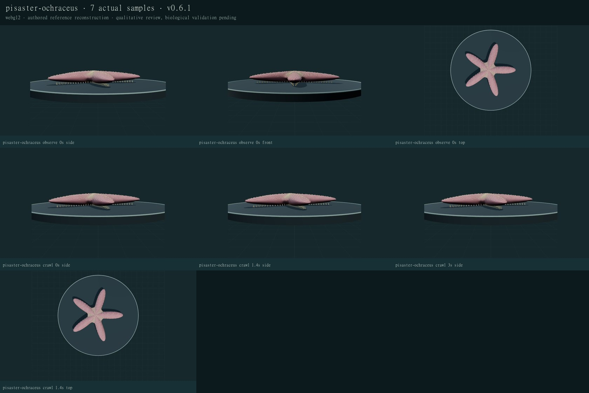
Animalia · Eukaryota · GBIF 2272172 · 7 actual samples · webgl2
Bat star Patiria miniata
Open this model and its evidence →![Bat star (Asterina miniata) and purple urchins (Strongylocentrotus [1] purpuratus)](../../assets/photo-patiria-miniata-A5ywf929.jpg) Compared and revised: Short broad arms merge into a wide webbed disc, distinct from the longer-armed stars.
Compared and revised: Short broad arms merge into a wide webbed disc, distinct from the longer-armed stars.
Remaining inaccuracies: Crescent ossicles, papulae, oral plates and natural asymmetric arm counts are simplified. Pale granules are illustrative, not a specimen texture; tube feet gesture without locomotor forces.
Real image: Claire Fackler, CINMS, NOAA · Public domain · Original caption, imaging context and terms. Delivered SHA-256 6a5b58bf999fd27024b7cb3b96b27c5c328e560e81464f48c02fe8cee6f6df55.
Source and movement scope
- Patiria miniata: Qualitative species/genus morphology context; no measured geometry, motion or developmental rate imported. Retrieved account supports qualitative context only. Retrieval: readable account.
- GBIF · Accepted species taxonomy: Taxonomic name/rank/family matching only; not behavior or native-range evidence.
- Licensed real organism reference and imaging context: Actual reference image and original caption/creator/license; not universal phenotype or biological validation.
- Tube-foot study · partial: Authored reference reconstruction from qualitative morphology and the separately licensed image. Shape, pigmentation, stage, dimensions and playback are not measured or independently validated. Appendage/deformation controls are partial studies; feeding, forces, fluid dynamics and calibrated locomotion are absent.
Same model identifier: reference-patiria-miniata. Display seconds have no calibrated biological time.
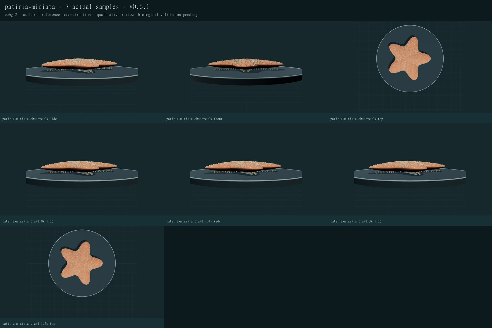
Animalia · Eukaryota · GBIF 5187093 · 7 actual samples · webgl2
Blue sea star Linckia laevigata
Open this model and its evidence → Compared and revised: Small disc and five longer blue arms distinguish the authored outline.
Compared and revised: Small disc and five longer blue arms distinguish the authored outline.
Remaining inaccuracies: The radial surface still makes the arms too flat and pointed relative to cylindrical living arms. Granular skin, pores, arm regeneration and natural color variation need reconstruction. Tube-foot timing is uncalibrated.
Real image: dr.scott.mills · CC BY-SA 2.0 · Original caption, imaging context and terms. Delivered SHA-256 45b4ed1b3dac5083aaae126d9e245c16d017be74f3e364e580c3d3b9f5e3e96b.
Source and movement scope
- Linckia laevigata | INFORMATION | Animal Diversity Web: Qualitative species/genus morphology context; no measured geometry, motion or developmental rate imported. Retrieved account supports qualitative context only. Retrieval: readable account.
- GBIF · Accepted species taxonomy: Taxonomic name/rank/family matching only; not behavior or native-range evidence.
- Licensed real organism reference and imaging context: Actual reference image and original caption/creator/license; not universal phenotype or biological validation.
- Tube-foot study · partial: Authored reference reconstruction from qualitative morphology and the separately licensed image. Shape, pigmentation, stage, dimensions and playback are not measured or independently validated. Appendage/deformation controls are partial studies; feeding, forces, fluid dynamics and calibrated locomotion are absent.
Same model identifier: reference-linckia-laevigata. Display seconds have no calibrated biological time.
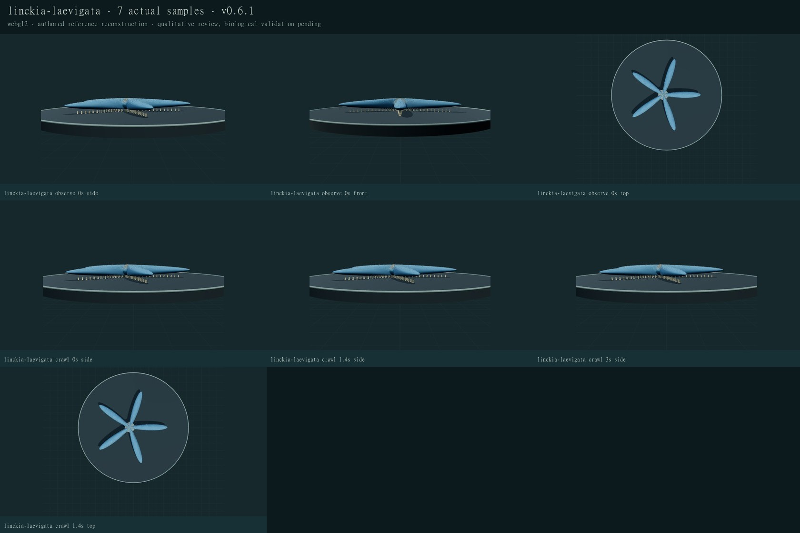
Animalia · Eukaryota · GBIF 2271208 · 7 actual samples · webgl2
Crown-of-thorns sea star Acanthaster planci
Open this model and its evidence → Compared and revised: Many arms, enlarged central body and dense long spine cues.
Compared and revised: Many arms, enlarged central body and dense long spine cues.
Remaining inaccuracies: Thirteen arms and spine density are authored display choices, not a universal count. Historic A. planci includes differentiated lineages; the Maldives photo does not resolve lineage. Papulae, pedicellariae and prey handling are absent.
Real image: John Hepburn · CC BY 4.0 · Original caption, imaging context and terms. Delivered SHA-256 44e8c176e72cc05fe88b9267cedfaa36493b3898b5bd27e2e91cab18135fca77.
Source and movement scope
- Acanthaster planci (crown-of-thorns starfish) | INFORMATION | Animal Diversity Web: Qualitative species/genus morphology context; no measured geometry, motion or developmental rate imported. Retrieved account supports qualitative context only. Retrieval: readable account.
- GBIF · Accepted species taxonomy: Taxonomic name/rank/family matching only; not behavior or native-range evidence.
- Licensed real organism reference and imaging context: Actual reference image and original caption/creator/license; not universal phenotype or biological validation.
- Tube-foot study · partial: Authored reference reconstruction from qualitative morphology and the separately licensed image. Shape, pigmentation, stage, dimensions and playback are not measured or independently validated. Appendage/deformation controls are partial studies; feeding, forces, fluid dynamics and calibrated locomotion are absent.
Same model identifier: reference-acanthaster-planci. Display seconds have no calibrated biological time.
Animalia · Eukaryota · GBIF 8236696 · 7 actual samples · webgl2
Sand sea star Astropecten irregularis
Open this model and its evidence → Compared and revised: Tapered arms, lateral spine cues and tube feet without terminal discs.
Compared and revised: Tapered arms, lateral spine cues and tube feet without terminal discs.
Remaining inaccuracies: Marginal plates are not individually reconstructed and spines are too regular. The photograph caption identifies a geographic subspecies; this is counted once at the accepted parent species. Burrowing and sediment mechanics are absent.
Real image: Rpillon · CC BY-SA 3.0 · Original caption, imaging context and terms. Delivered SHA-256 63c772d812b8ec620f6a48bea19b861cb73576479721583a7adcec9d33ecb0dc.
Source and movement scope
- Astropecten irregularis - BIOTIC: Qualitative species/genus morphology context; no measured geometry, motion or developmental rate imported. Retrieved account supports qualitative context only. Retrieval: readable account.
- GBIF · Accepted species taxonomy: Taxonomic name/rank/family matching only; not behavior or native-range evidence.
- Licensed real organism reference and imaging context: Actual reference image and original caption/creator/license; not universal phenotype or biological validation.
- Tube-foot study · partial: Authored reference reconstruction from qualitative morphology and the separately licensed image. Shape, pigmentation, stage, dimensions and playback are not measured or independently validated. Appendage/deformation controls are partial studies; feeding, forces, fluid dynamics and calibrated locomotion are absent.
Same model identifier: reference-astropecten-irregularis. Display seconds have no calibrated biological time.
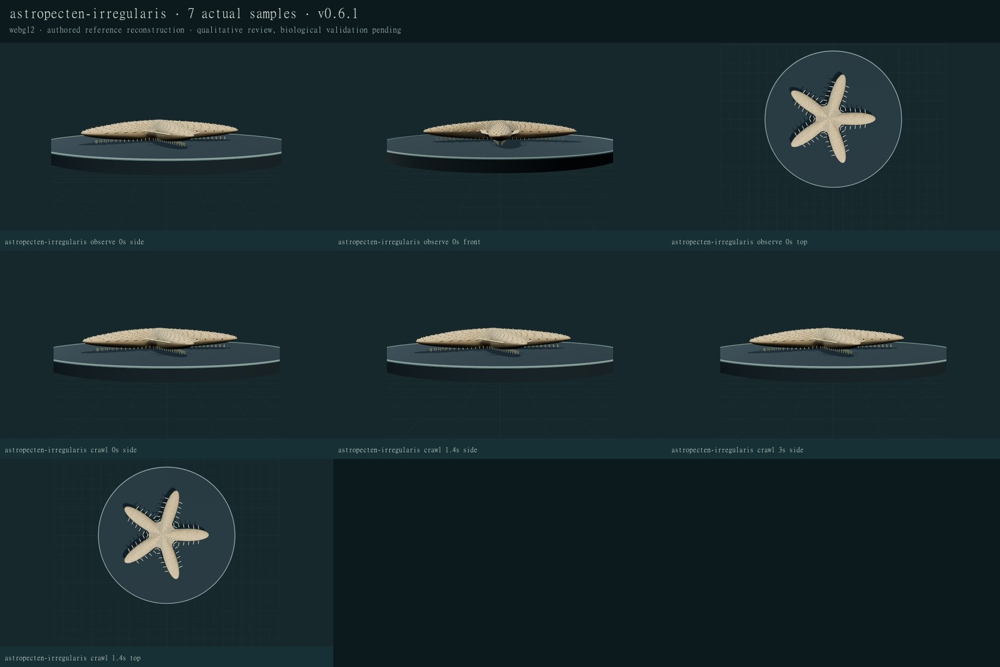
Animalia · Eukaryota · GBIF 2278852 · 7 actual samples · webgl2
Purple sea urchin Strongylocentrotus purpuratus
Open this model and its evidence → Compared and revised: Purple rounded test with dense pointed spine relief and retained tube-foot controls.
Compared and revised: Purple rounded test with dense pointed spine relief and retained tube-foot controls.
Remaining inaccuracies: Primary/secondary spine differentiation, ambulacral pore arcs, movable spine joints and pedicellariae remain incomplete. Tube-foot rotation is a partial display, not walking or grazing.
Real image: Ed Bierman from CA, usa · CC BY 2.0 · Original caption, imaging context and terms. Delivered SHA-256 7901e0dd5dfd422e2dc406755fb368e6a2d88d93a42258f9be13140b81fae09f.
Source and movement scope
- Strongylocentrotus purpuratus: Species morphology or explicitly scoped institutional habitat/taxonomic context; no measured model coordinates or motion rates imported. Retrieved account supports qualitative context only. Retrieval: readable account.
- GBIF · Accepted species taxonomy: Taxonomic name/rank/family matching only; not behavior or native-range evidence.
- Licensed real organism reference and imaging context: Actual reference image and original caption/creator/license; not universal phenotype or biological validation.
- Tube-foot study · partial: Authored reference reconstruction from qualitative morphology and the separately licensed image. Shape, pigmentation, stage, dimensions and playback are not measured or independently validated. Appendage/deformation controls are partial studies; feeding, forces, fluid dynamics and calibrated locomotion are absent.
Same model identifier: reference-strongylocentrotus-purpuratus. Display seconds have no calibrated biological time.
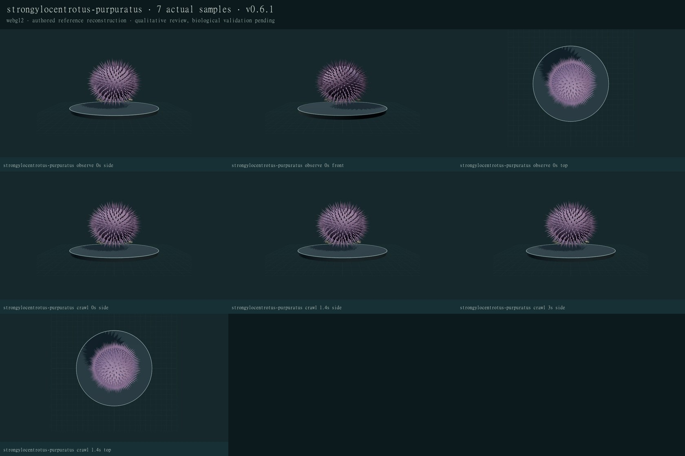
Animalia · Eukaryota · GBIF 2278845 · 7 actual samples · webgl2
Rock sea urchin Paracentrotus lividus
Open this model and its evidence → Compared and revised: Rounded test and close pointed spines, separated from the long-spined Diadema form.
Compared and revised: Rounded test and close pointed spines, separated from the long-spined Diadema form.
Remaining inaccuracies: Green study pigment differs from the purple photographed individual; natural color varies. Spine articulation, oral lantern and covering behavior are absent. Source habitat evidence is explicitly broader than anatomy.
Real image: Frédéric Ducarme · CC BY-SA 3.0 · Original caption, imaging context and terms. Delivered SHA-256 af1a5e4485f7a2ef62e72e2ba65ba14eed6c67f52169893b0d43803454629170.
Source and movement scope
Same model identifier: reference-paracentrotus-lividus. Display seconds have no calibrated biological time.
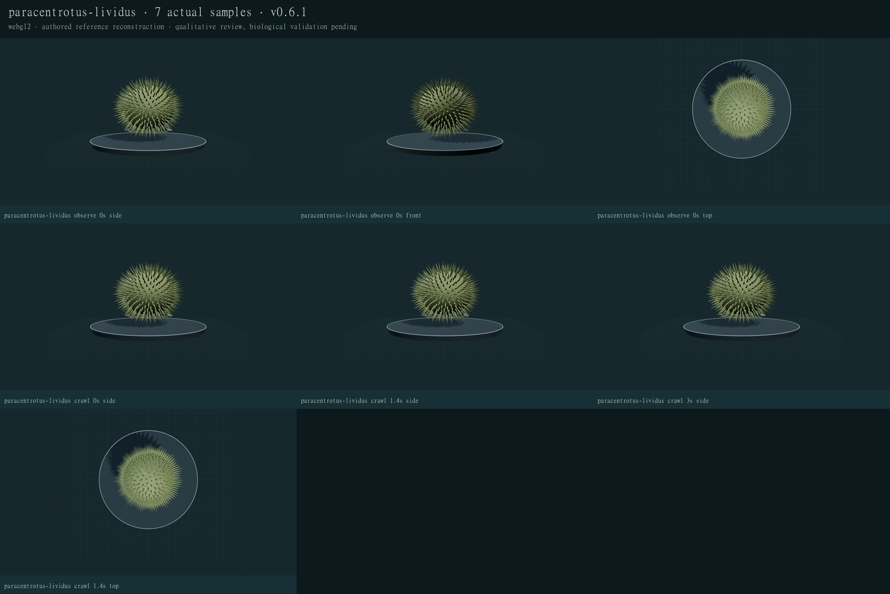
Animalia · Eukaryota · GBIF 5721108 · 7 actual samples · webgl2
Long-spined sea urchin Diadema setosum
Open this model and its evidence → Compared and revised: Long thin spines, five pale aboral spots and an orange periproctal-ring cue.
Compared and revised: Long thin spines, five pale aboral spots and an orange periproctal-ring cue.
Remaining inaccuracies: Very fine dark spines are difficult to resolve at overview scale. Anal cone, blue-line pattern, secondary spines and spine joints are simplified; five spots alone are not a diagnostic identification. No measured locomotion.
Real image: Frédéric Ducarme · CC BY-SA 4.0 · Original caption, imaging context and terms. Delivered SHA-256 fcf669e1fe5fbc61c43d3dadc56dfb19e64046e8e5610bd819d02ed4e82d6335.
Source and movement scope
- 503 Service Unavailable: Qualitative species/genus morphology context; no measured geometry, motion or developmental rate imported. Direct full-text retrieval limited; independent source reading and identification remain incomplete. Retrieval: limited; further reading needed.
- GBIF · Accepted species taxonomy: Taxonomic name/rank/family matching only; not behavior or native-range evidence.
- Licensed real organism reference and imaging context: Actual reference image and original caption/creator/license; not universal phenotype or biological validation.
- Tube-foot study · partial: Authored reference reconstruction from qualitative morphology and the separately licensed image. Shape, pigmentation, stage, dimensions and playback are not measured or independently validated. Appendage/deformation controls are partial studies; feeding, forces, fluid dynamics and calibrated locomotion are absent.
Same model identifier: reference-diadema-setosum. Display seconds have no calibrated biological time.
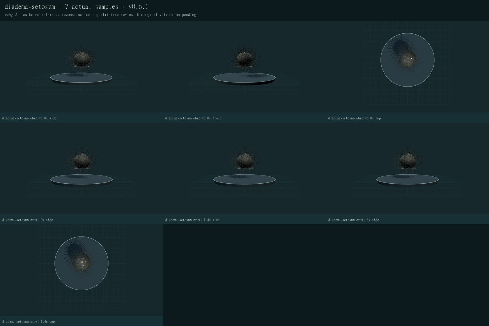
Animalia · Eukaryota · GBIF 2278863 · 7 actual samples · webgl2
Burrowing sea urchin Echinometra mathaei
Open this model and its evidence → Compared and revised: Oval test, stout pointed spines and added pale basal flanges based on the published morphology.
Compared and revised: Oval test, stout pointed spines and added pale basal flanges based on the published morphology.
Remaining inaccuracies: Milled-ring detail, pore-pair arcs and regional sibling-species differences remain unresolved. Body colors vary; the NOAA photo is not a universal phenotype. Tube-foot gestures do not simulate bioerosion.
Real image: Dr. James P. McVey, NOAA Sea Grant Program · Public domain · Original caption, imaging context and terms. Delivered SHA-256 59da15d74913aa0c1230a1c91c385c3efba6b49ce4e6fa3b48a65d84fdc3bc38.
Source and movement scope
- 403 Forbidden: Species morphology or explicitly scoped institutional habitat/taxonomic context; no measured model coordinates or motion rates imported. Direct full-text retrieval limited; independent source reading and identification remain incomplete. Retrieval: limited; further reading needed.
- GBIF · Accepted species taxonomy: Taxonomic name/rank/family matching only; not behavior or native-range evidence.
- Licensed real organism reference and imaging context: Actual reference image and original caption/creator/license; not universal phenotype or biological validation.
- Tube-foot study · partial: Authored reference reconstruction from qualitative morphology and the separately licensed image. Shape, pigmentation, stage, dimensions and playback are not measured or independently validated. Appendage/deformation controls are partial studies; feeding, forces, fluid dynamics and calibrated locomotion are absent.
Same model identifier: reference-echinometra-mathaei. Display seconds have no calibrated biological time.
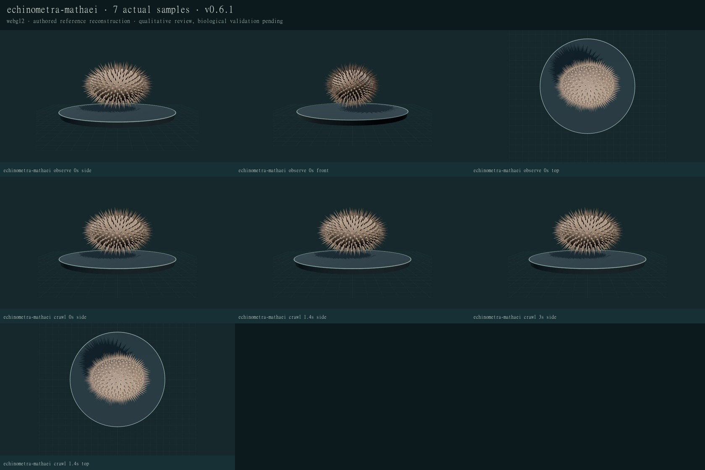
Animalia · Eukaryota · GBIF 5188174 · 3 actual samples · webgl2
Inflated sea biscuit Clypeaster rosaceus
Open this model and its evidence →![Clypeaster rosaceus Lamarck, 1816 - washed ashore onto a rocky shoreline. Irregular echinoids have somewhat globular skeletons (tests) composed of interlocking calcite plates and covered in short, fur-like spines. The skeleton is bilaterally symmetrical, not pentaradially symmetrical as in the sea urchins. The upper side of the skeleton has the pattern of a 5-petaled star - each petal is an ambulacrum. The mouth and anus are at opposite ends of the long axis of the skeleton. Heart urchins are infaunal deposit feeders - they consume bulk sediments, digest any organic matter mixed in, and excrete large quantities of sediments. In the specimen shown above, decay has resulted in the spines being detached - the small pustules are spine attachment bases. Locality: beach landward from Snapshot Reef, Fernandez Bay, western San Salvador Island, eastern Bahamas](../../assets/photo-clypeaster-rosaceus-BNwT85W2.jpg) Compared and revised: Thick domed test, five petaloids and fine spine cues; feeding remains disabled.
Compared and revised: Thick domed test, five petaloids and fine spine cues; feeding remains disabled.
Remaining inaccuracies: The reference photograph shows a washed-up test, not live coloration or posture. Oral grooves, lunule-free margin proportions, living spine/foot density and sediment feeding require living-specimen reconstruction.
Real image: James St. John · CC BY 2.0 · Original caption, imaging context and terms. Delivered SHA-256 d5adf0a100073853a5e4cf8ac84c921d9d29a9ea25bb11d7a8b1881e0b3730cc.
Source and movement scope
- Just a moment...: Species morphology or explicitly scoped institutional habitat/taxonomic context; no measured model coordinates or motion rates imported. Direct full-text retrieval limited; independent source reading and identification remain incomplete. Retrieval: limited; further reading needed.
- GBIF · Accepted species taxonomy: Taxonomic name/rank/family matching only; not behavior or native-range evidence.
- Licensed real organism reference and imaging context: Actual reference image and original caption/creator/license; not universal phenotype or biological validation.
- Particle capture — pending · unavailable: Biological process documented in the species context; no working simulation of this mechanism is claimed.
Same model identifier: reference-clypeaster-rosaceus. Display seconds have no calibrated biological time.
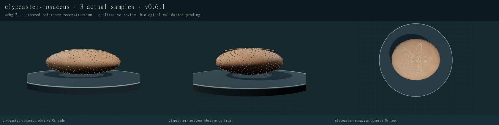
Animalia · Eukaryota · GBIF 5188240 · 7 actual samples · webgl2
Orange-footed sea cucumber Cucumaria frondosa
Open this model and its evidence → Compared and revised: Upright feeding orientation, ten branched oral tentacles and five body rows of tube-foot cues.
Compared and revised: Upright feeding orientation, ten branched oral tentacles and five body rows of tube-foot cues.
Remaining inaccuracies: Tentacle branching remains sparse compared with the bushy living crown. Skin folds, double foot rows, attachment geometry and oral ingestion cycles are approximate; no suspension feeding or current forces.
Real image: Vsevolod · CC BY 4.0 · Original caption, imaging context and terms. Delivered SHA-256 5bb3bbe99d96e1d4d4ef16b16e04b7eb836efc5fbf726a1688feb1e4921b4946.
Source and movement scope
- A sea cucumber (Cucumaria frondosa) - MarLIN - The Marine Life Information Network: Species morphology or explicitly scoped institutional habitat/taxonomic context; no measured model coordinates or motion rates imported. Retrieved account supports qualitative context only. Retrieval: readable account.
- GBIF · Accepted species taxonomy: Taxonomic name/rank/family matching only; not behavior or native-range evidence.
- Licensed real organism reference and imaging context: Actual reference image and original caption/creator/license; not universal phenotype or biological validation.
- Tentacle study · partial: Authored reference reconstruction from qualitative morphology and the separately licensed image. Shape, pigmentation, stage, dimensions and playback are not measured or independently validated. Appendage/deformation controls are partial studies; feeding, forces, fluid dynamics and calibrated locomotion are absent.
Same model identifier: reference-cucumaria-frondosa. Display seconds have no calibrated biological time.
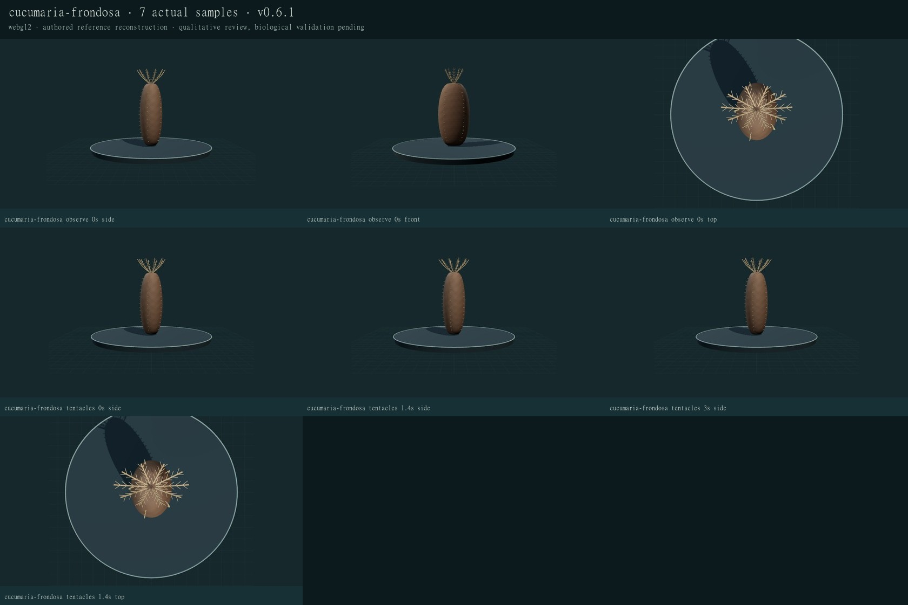
Animalia · Eukaryota · GBIF 2279167 · 7 actual samples · webgl2
Black sea cucumber Holothuria atra
Open this model and its evidence → Compared and revised: Continuous dark body, sand-grain cues, three ventral foot regions and twenty short oral tentacles.
Compared and revised: Continuous dark body, sand-grain cues, three ventral foot regions and twenty short oral tentacles.
Remaining inaccuracies: Sand cover is much sparser than the photographed individual. Mouth should be more ventrally positioned; foot density, skin folds and sediment-to-mouth handling are incomplete. Tentacle gesture is not feeding.
Real image: Philippe Bourjon · CC BY-SA 3.0 · Original caption, imaging context and terms. Delivered SHA-256 c0cbec73a93a095809009f9e7cec50bae11c07f07cc6fda933ed78b50ddebed2.
Source and movement scope
- Just a moment...: Species morphology or explicitly scoped institutional habitat/taxonomic context; no measured model coordinates or motion rates imported. Direct full-text retrieval limited; independent source reading and identification remain incomplete. Retrieval: limited; further reading needed.
- GBIF · Accepted species taxonomy: Taxonomic name/rank/family matching only; not behavior or native-range evidence.
- Licensed real organism reference and imaging context: Actual reference image and original caption/creator/license; not universal phenotype or biological validation.
- Tentacle study · partial: Authored reference reconstruction from qualitative morphology and the separately licensed image. Shape, pigmentation, stage, dimensions and playback are not measured or independently validated. Appendage/deformation controls are partial studies; feeding, forces, fluid dynamics and calibrated locomotion are absent.
Same model identifier: reference-holothuria-atra. Display seconds have no calibrated biological time.
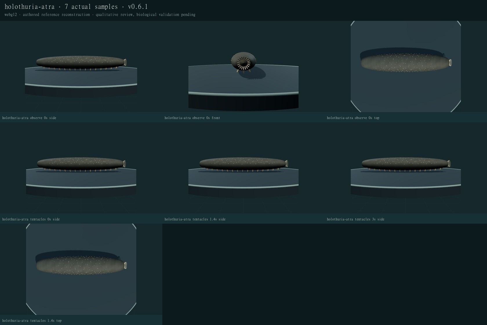
Animalia · Eukaryota · GBIF 2279100 · 7 actual samples · webgl2
Japanese sea cucumber Apostichopus japonicus
Open this model and its evidence → Compared and revised: Papillate body, ventral foot cues and twenty oral-tentacle controls.
Compared and revised: Papillate body, ventral foot cues and twenty oral-tentacle controls.
Remaining inaccuracies: Papillae are still too conical and evenly placed; tissue wrinkles, color forms and adherence to the vertical photographed surface need refinement. No sediment ingestion, body-wall crawling or calibrated movement.
Real image: OpenCage · CC BY-SA 2.5 · Original caption, imaging context and terms. Delivered SHA-256 b0347c933b0bcf2305235a44fd2366f8c096029aac97a18dbb04fdc72b73c453.
Source and movement scope
- 404 Not Found: Qualitative species morphology context; No geometry measurements or biomechanical rates imported. Direct full-text retrieval limited; independent source reading and identification remain incomplete. Retrieval: limited; further reading needed.
- GBIF · Accepted species taxonomy: Taxonomic name/rank/family matching only; not behavior or native-range evidence.
- Licensed real organism reference and imaging context: Actual reference image and original caption/creator/license; not universal phenotype or biological validation.
- Tentacle study · partial: Authored reference reconstruction from qualitative morphology and the separately licensed image. Shape, pigmentation, stage, dimensions and playback are not measured or independently validated. Appendage/deformation controls are partial studies; feeding, forces, fluid dynamics and calibrated locomotion are absent.
Same model identifier: reference-apostichopus-japonicus. Display seconds have no calibrated biological time.
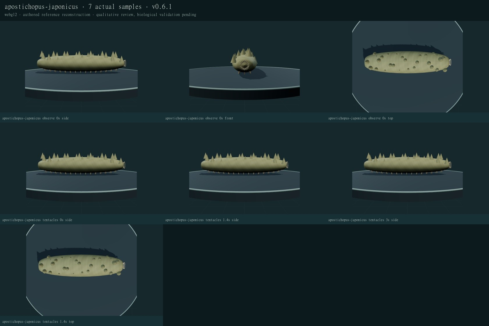
Animalia · Eukaryota · GBIF 2275361 · 7 actual samples · webgl2
Black brittle star Ophiocomina nigra
Open this model and its evidence → Compared and revised: Separate disc, five long spine-bearing arms and hierarchical joints that carry their attached structures during flexion.
Compared and revised: Separate disc, five long spine-bearing arms and hierarchical joints that carry their attached structures during flexion.
Remaining inaccuracies: Disc scaling and natural pigment patterns need validation against identified specimens. Arm ossicles, podia, oral structures and substrate pushing are incomplete. Flexion is qualitative, not a measured gait.
Real image: Olivier Dugornay · CC BY 4.0 · Original caption, imaging context and terms. Delivered SHA-256 fcaa549b659d3d8e61e79a314091611c96c071ee6a93407c1ace29082b5b7325.
Source and movement scope
- Black brittlestar (Ophiocomina nigra) - MarLIN - The Marine Life Information Network: Qualitative species/genus morphology context; no measured geometry, motion or developmental rate imported. Retrieved account supports qualitative context only. Retrieval: readable account.
- GBIF · Accepted species taxonomy: Taxonomic name/rank/family matching only; not behavior or native-range evidence.
- Licensed real organism reference and imaging context: Actual reference image and original caption/creator/license; not universal phenotype or biological validation.
- Arm-flexion study · partial: Authored reference reconstruction from qualitative morphology and the separately licensed image. Shape, pigmentation, stage, dimensions and playback are not measured or independently validated. Appendage/deformation controls are partial studies; feeding, forces, fluid dynamics and calibrated locomotion are absent.
Same model identifier: reference-ophiocomina-nigra. Display seconds have no calibrated biological time.
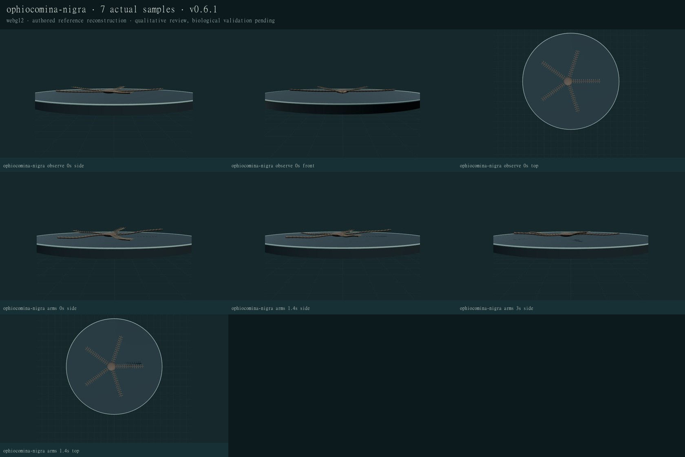
Animalia · Eukaryota · GBIF 5187721 · 7 actual samples · webgl2
Rosy feather star Antedon bifida
Open this model and its evidence → Compared and revised: Rejected a larval drawing in favor of Bernard Picton’s adult photograph; ten pinnulate arms now emerge in five paired directions with attachment cirri.
Compared and revised: Rejected a larval drawing in favor of Bernard Picton’s adult photograph; ten pinnulate arms now emerge in five paired directions with attachment cirri.
Remaining inaccuracies: The five basal bifurcations, pinnule density, feeding grooves and claw-like cirri are approximate. Displayed arm spread differs from the attached photographed posture; flexion has no current-dependent feeding or swimming forces.
Real image: Bernard Picton · CC BY-SA 3.0 · Original caption, imaging context and terms. Delivered SHA-256 a216b16c51d3b245aae8877949953915df76024fdc988379e97fe10d55f716d4.
Source and movement scope
- Rosy feather star (Antedon bifida) - MarLIN - The Marine Life Information Network: Species morphology or explicitly scoped institutional habitat/taxonomic context; no measured model coordinates or motion rates imported. Retrieved account supports qualitative context only. Retrieval: readable account.
- GBIF · Accepted species taxonomy: Taxonomic name/rank/family matching only; not behavior or native-range evidence.
- Licensed real organism reference and imaging context: Actual reference image and original caption/creator/license; not universal phenotype or biological validation.
- Arm-flexion study · partial: Authored reference reconstruction from qualitative morphology and the separately licensed image. Shape, pigmentation, stage, dimensions and playback are not measured or independently validated. Appendage/deformation controls are partial studies; feeding, forces, fluid dynamics and calibrated locomotion are absent.
Same model identifier: reference-antedon-bifida. Display seconds have no calibrated biological time.
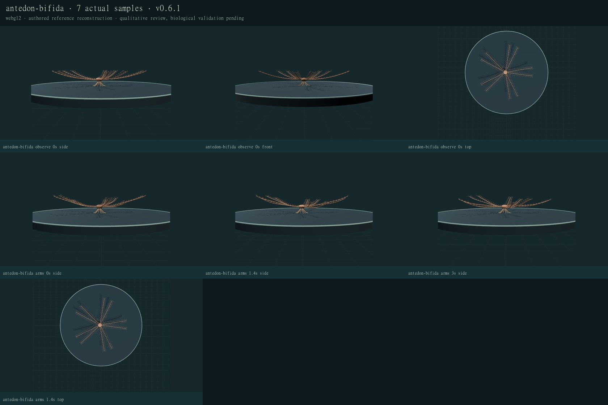
Animalia · Eukaryota · GBIF 2256644 · 7 actual samples · webgl2
Snakelocks anemone Anemonia viridis
Open this model and its evidence →![Snakelocks anemone ( Anemonia viridis ), Arrábida Natural Park , Portugal. The snakelocks anemone is a predator , related to jellyfish (but without a medusa stage in their lifecycle), that ensnares prey of suitable size that comes within reach of its tentacles immobilizing it with the aid of their nematocysts (explosive cells that contain one giant secretory organelle that can deliver a sting). The prey is then transported to the mouth and thrust into the pharynx. This species is widely consumed in Andalusia and is known as ortiguillas de mar (literally, "little sea nettles", because it has urticant properties before it is cooked). The whole animal is marinated in vinegar , coated in a tempura-like batter , and deep-fried in olive oil .](../../assets/photo-anemonia-viridis-DiXEcimM.jpg) Compared and revised: Long narrow tentacles, attached column and green/purple-tip study phenotype.
Compared and revised: Long narrow tentacles, attached column and green/purple-tip study phenotype.
Remaining inaccuracies: The real reference shows a gray-brown phenotype rather than the green model. Tentacle count, curvature, oral anatomy and symbiont distribution remain unmeasured. Swaying is not a fluid or prey-capture simulation.
Real image: Diego Delso · CC BY-SA 4.0 · Original caption, imaging context and terms. Delivered SHA-256 e66879a635ada5d2af64c749f63608f084ca809bcd075fb11946af8f84006488.
Source and movement scope
- Snakelocks anemone (Anemonia viridis) - MarLIN - The Marine Life Information Network: Species morphology or explicitly scoped institutional habitat/taxonomic context; no measured model coordinates or motion rates imported. Retrieved account supports qualitative context only. Retrieval: readable account.
- GBIF · Accepted species taxonomy: Taxonomic name/rank/family matching only; not behavior or native-range evidence.
- Licensed real organism reference and imaging context: Actual reference image and original caption/creator/license; not universal phenotype or biological validation.
- Tentacle study · partial: Authored reference reconstruction from qualitative morphology and the separately licensed image. Shape, pigmentation, stage, dimensions and playback are not measured or independently validated. Appendage/deformation controls are partial studies; feeding, forces, fluid dynamics and calibrated locomotion are absent.
Same model identifier: reference-anemonia-viridis. Display seconds have no calibrated biological time.
Animalia · Eukaryota · GBIF 2256565 · 7 actual samples · webgl2
Strawberry anemone Actinia fragacea
Open this model and its evidence → Compared and revised: Red column with pale green spot cues, pedal base and an expanded tentacle crown.
Compared and revised: Red column with pale green spot cues, pedal base and an expanded tentacle crown.
Remaining inaccuracies: Photograph shows a contracted animal; it is not a direct expanded-posture comparison. Spot distribution, acrorhagi and tentacle cycles need work. Column retraction and attachment forces are absent.
Real image: MichaelMaggs · CC BY-SA 3.0 · Original caption, imaging context and terms. Delivered SHA-256 4e54398ff0d0693e0603442d6b98b2184caaa1f2335ea9482ca0442750177491.
Source and movement scope
- Strawberry anemone (Actinia fragacea) - MarLIN - The Marine Life Information Network: Species morphology or explicitly scoped institutional habitat/taxonomic context; no measured model coordinates or motion rates imported. Retrieved account supports qualitative context only. Retrieval: readable account.
- GBIF · Accepted species taxonomy: Taxonomic name/rank/family matching only; not behavior or native-range evidence.
- Licensed real organism reference and imaging context: Actual reference image and original caption/creator/license; not universal phenotype or biological validation.
- Tentacle study · partial: Authored reference reconstruction from qualitative morphology and the separately licensed image. Shape, pigmentation, stage, dimensions and playback are not measured or independently validated. Appendage/deformation controls are partial studies; feeding, forces, fluid dynamics and calibrated locomotion are absent.
Same model identifier: reference-actinia-fragacea. Display seconds have no calibrated biological time.
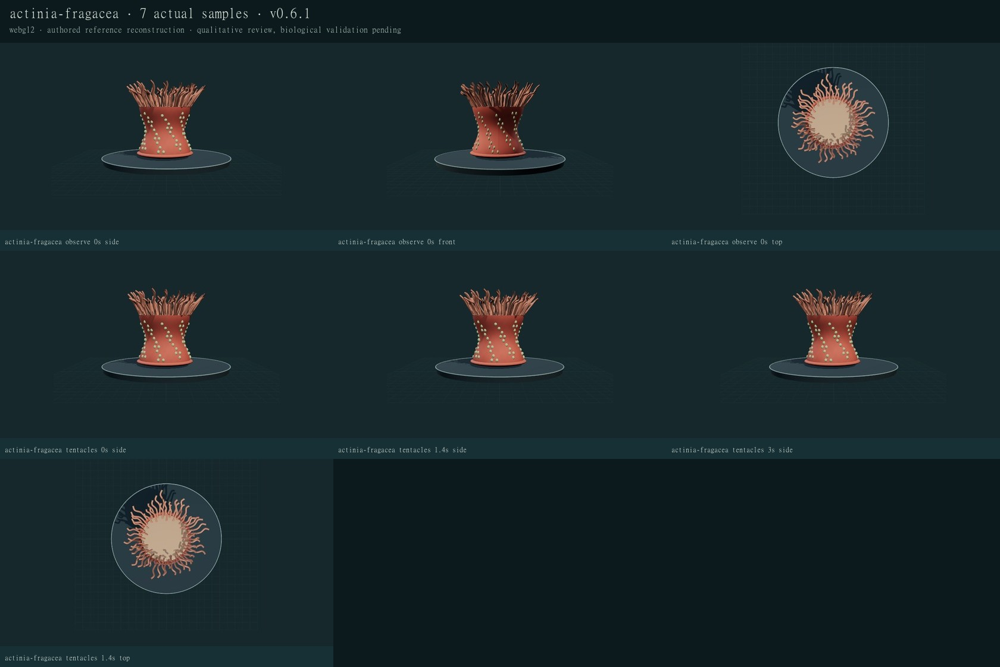
Animalia · Eukaryota · GBIF 5183968 · 7 actual samples · webgl2
Giant plumose anemone Metridium farcimen
Open this model and its evidence → Compared and revised: Tall attached column and enlarged lobed crown with many fine tentacles.
Compared and revised: Tall attached column and enlarged lobed crown with many fine tentacles.
Remaining inaccuracies: The added continuous lobed oral surface is still too regular and the photographed crown is more densely folded. Fine tentacle density, column wrinkles, mouth and acontia are incomplete. Aquarium photo colors vary; sway is uncalibrated.
Real image: Daderot · CC0 · Original caption, imaging context and terms. Delivered SHA-256 5e9757b4b6300d0672bacda2c1ca2894162ddb63fe7fdd2a9336f87cc9f19e9f.
Source and movement scope
- Metridium farcimen: Qualitative species/genus morphology context; no measured geometry, motion or developmental rate imported. Retrieved account supports qualitative context only. Retrieval: readable account.
- GBIF · Accepted species taxonomy: Taxonomic name/rank/family matching only; not behavior or native-range evidence.
- Licensed real organism reference and imaging context: Actual reference image and original caption/creator/license; not universal phenotype or biological validation.
- Tentacle study · partial: Authored reference reconstruction from qualitative morphology and the separately licensed image. Shape, pigmentation, stage, dimensions and playback are not measured or independently validated. Appendage/deformation controls are partial studies; feeding, forces, fluid dynamics and calibrated locomotion are absent.
Same model identifier: reference-metridium-farcimen. Display seconds have no calibrated biological time.
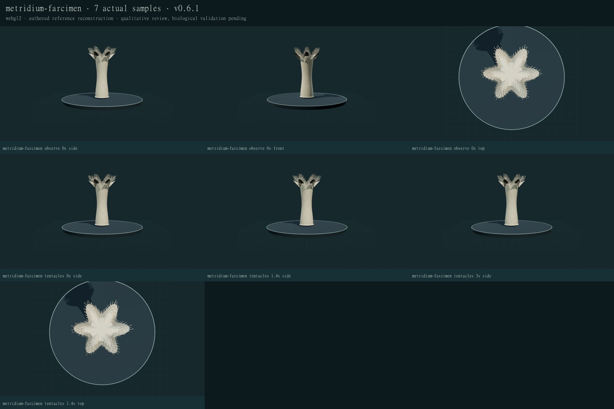
Animalia · Eukaryota · GBIF 6472214 · 7 actual samples · webgl2
Warty sea anemone Bunodosoma cavernatum
Open this model and its evidence → Compared and revised: Replaced a mixed histology figure with an openly released real observation photo; column vesicle cues and retained tentacle controls.
Compared and revised: Replaced a mixed histology figure with an openly released real observation photo; column vesicle cues and retained tentacle controls.
Remaining inaccuracies: Community photo identification is not independently confirmed by the archive. Vesicle rows, acrorhagi, orange oral/radial pattern and tissue folds are simplified compared with the primary taxonomic account. No feeding mechanics.
Real image: smokeybear33 (iNaturalist observer; photo released CC0) · CC0 1.0 · Original caption, imaging context and terms. Delivered SHA-256 8b021cb0703f556ed7f677170ed3cc05705499e2436e7881fb0ae4d1efe88822.
Source and movement scope
Same model identifier: reference-bunodosoma-cavernatum. Display seconds have no calibrated biological time.
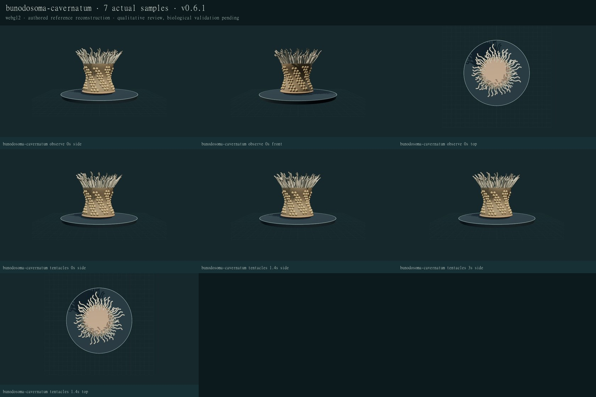
Plantae · Eukaryota · GBIF 2927004 · 7 actual samples · webgl2
Common sage Salvia officinalis
Open this model and its evidence → Compared and revised: Opposite textured leaves with fine hair cues and separate bilabiate flower parts in whorls.
Compared and revised: Opposite textured leaves with fine hair cues and separate bilabiate flower parts in whorls.
Remaining inaccuracies: Leaf wrinkling, revolute margins, calyx teeth and anther lever anatomy are not reconstructed precisely. Numerical pigment is not a scan. Anchored size interpolation does not model growth or flowering.
Real image: Kurt Stüber · CC BY-SA 3.0 · Original caption, imaging context and terms. Delivered SHA-256 c87ae0cc624bd489bcf62150fbcb7fb82fd9f6ef4410a1740d0ce26a11e2bad7.
Source and movement scope
Same model identifier: reference-salvia-officinalis. Display seconds have no calibrated biological time.
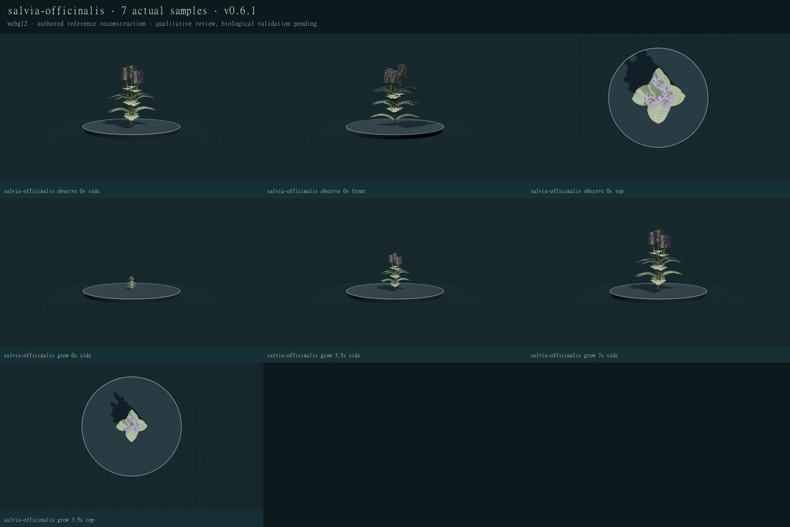
Plantae · Eukaryota · GBIF 5341442 · 7 actual samples · webgl2
Common thyme Thymus vulgaris
Open this model and its evidence → Compared and revised: Low woody branching, small opposite leaves and terminal clusters of small flowers.
Compared and revised: Low woody branching, small opposite leaves and terminal clusters of small flowers.
Remaining inaccuracies: Leaf margins should be more revolute; shoot branching and small floral anatomy remain idealized. Rejected a rate-limited photograph in favor of a licensed real reference. Only mature-form size interpolation is offered.
Real image: Balles2601 · CC BY-SA 4.0 · Original caption, imaging context and terms. Delivered SHA-256 5f3e7d7f2d6eb193ca617f20a854779326baae4c2338bdecc81523810e0f631f.
Source and movement scope
Same model identifier: reference-thymus-vulgaris. Display seconds have no calibrated biological time.
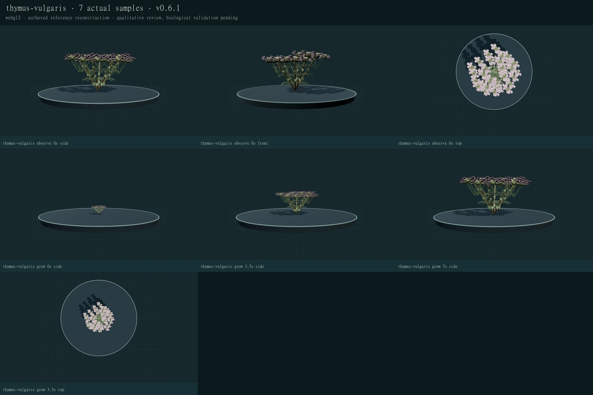
Plantae · Eukaryota · GBIF 2926612 · 7 actual samples · webgl2
Oregano Origanum vulgare
Open this model and its evidence → Compared and revised: Opposite oval leaves and branched terminal flower clusters.
Compared and revised: Opposite oval leaves and branched terminal flower clusters.
Remaining inaccuracies: Bracts, compound cymes and individual corolla/calyx details are simplified. Vein pigment and branch density remain authored. Size interpolation does not simulate organ emergence, seed formation or wind.
Real image: Ivar Leidus · CC BY-SA 3.0 · Original caption, imaging context and terms. Delivered SHA-256 98d5aad8470a5353bcaad8086dcf1f0e0d6d2a1dbe6ca44a638442dd10f732a7.
Source and movement scope
Same model identifier: reference-origanum-vulgare. Display seconds have no calibrated biological time.
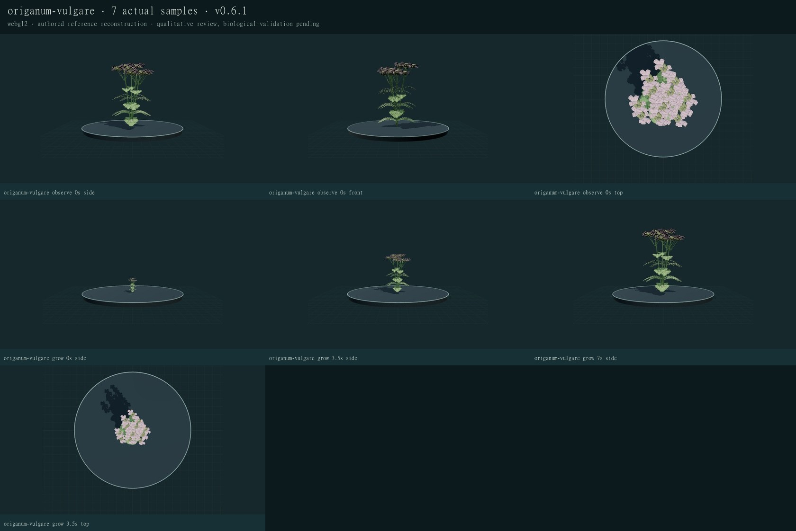
Plantae · Eukaryota · GBIF 5341501 · 7 actual samples · webgl2
Lemon balm Melissa officinalis
Open this model and its evidence → Compared and revised: Broad opposite leaves with crenate cues, veins and pale axillary flowers.
Compared and revised: Broad opposite leaves with crenate cues, veins and pale axillary flowers.
Remaining inaccuracies: Natural leaf corrugation, heart-shaped bases, petioles and axillary cymes need closer specimen modeling. Surface pigment and size timing are qualitative; no actual development or physiological process.
Real image: Amitchell125 · CC BY-SA 4.0 · Original caption, imaging context and terms. Delivered SHA-256 2a62f1ea38c5e68d50ba8899b48fbc2d57dc32857cb8379647eef9933aab4235.
Source and movement scope
- Melissa officinalis (Balm, Balm Leaf, Balm Mint, Common Balm, Dropsywort, Honey Balm, Lemon Balm, Sweet Balm, Sweet Mary, Tea Balm) | North Carolina Extension Gardener Plant Toolbox: Qualitative species/genus morphology context; no measured geometry, motion or developmental rate imported. Retrieved account supports qualitative context only. Retrieval: readable account.
- GBIF · Accepted species taxonomy: Taxonomic name/rank/family matching only; not behavior or native-range evidence.
- Licensed real organism reference and imaging context: Actual reference image and original caption/creator/license; not universal phenotype or biological validation.
- Anchored size study · partial: Authored reference reconstruction from qualitative morphology and the separately licensed image. Shape, pigmentation, stage, dimensions and playback are not measured or independently validated. Anchored size is a display interpolation, not a growth, ontogenetic or biomechanical simulation.
Same model identifier: reference-melissa-officinalis. Display seconds have no calibrated biological time.
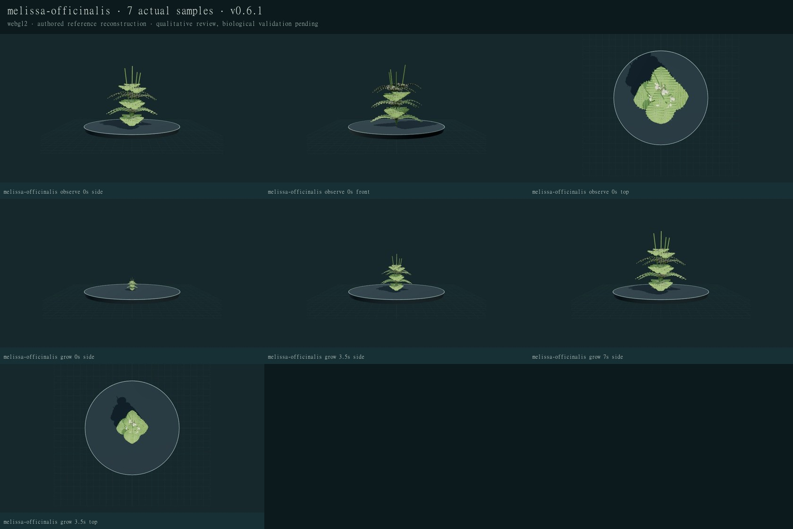
Plantae · Eukaryota · GBIF 5341499 · 7 actual samples · webgl2
Catnip Nepeta cataria
Open this model and its evidence → Compared and revised: Hairy gray-green opposite leaves and pale flowers on terminal clusters.
Compared and revised: Hairy gray-green opposite leaves and pale flowers on terminal clusters.
Remaining inaccuracies: Leaf bases, serration, dense hairs, flower spotting and calyx proportions remain incomplete. Small hair instances are display cues, not measured trichome density. Size study is not flowering.
Real image: D. Gordon E. Robertson · CC BY-SA 3.0 · Original caption, imaging context and terms. Delivered SHA-256 5dc219e5735851a13214b37f4b632dbcfe315a5ce39062da09db813fa8dcbec3.
Source and movement scope
- Nepeta cataria (Catmint, Catnip, Catswort) | North Carolina Extension Gardener Plant Toolbox: Qualitative species/genus morphology context; no measured geometry, motion or developmental rate imported. Retrieved account supports qualitative context only. Retrieval: readable account.
- GBIF · Accepted species taxonomy: Taxonomic name/rank/family matching only; not behavior or native-range evidence.
- Licensed real organism reference and imaging context: Actual reference image and original caption/creator/license; not universal phenotype or biological validation.
- Anchored size study · partial: Authored reference reconstruction from qualitative morphology and the separately licensed image. Shape, pigmentation, stage, dimensions and playback are not measured or independently validated. Anchored size is a display interpolation, not a growth, ontogenetic or biomechanical simulation.
Same model identifier: reference-nepeta-cataria. Display seconds have no calibrated biological time.
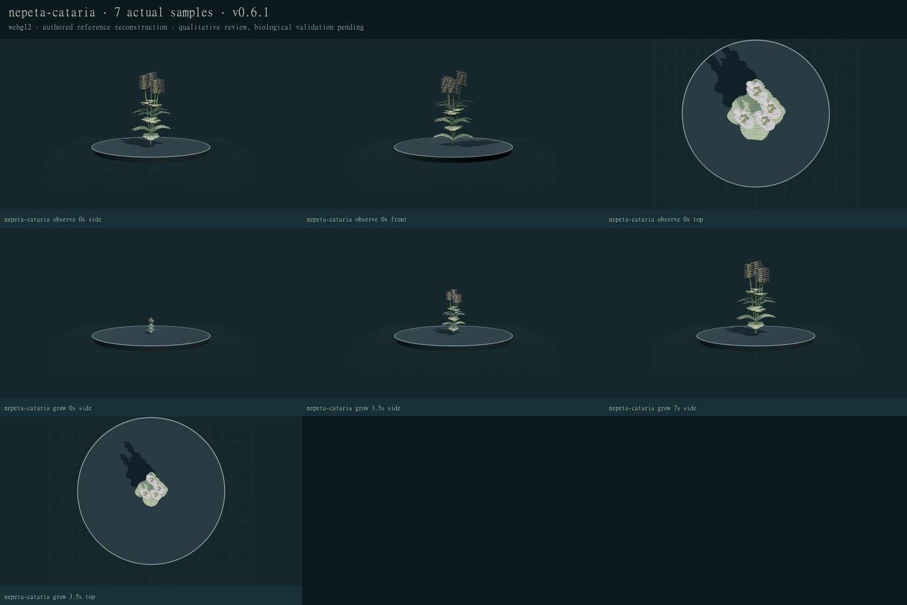
Plantae · Eukaryota · GBIF 8249932 · 7 actual samples · webgl2
Scarlet sage Salvia splendens
Open this model and its evidence → Compared and revised: Long red flower tubes and calyx cues above broad opposite leaves.
Compared and revised: Long red flower tubes and calyx cues above broad opposite leaves.
Remaining inaccuracies: Corolla hood, red calyx shape and cultivar-specific inflorescence density need refinement. The reference shows cultivated plants and does not define all species phenotypes. No validated growth or pollination mechanics.
Real image: Gabriel Collares · CC BY 4.0 · Original caption, imaging context and terms. Delivered SHA-256 e5927b05e374c000fbcccd552b01df00b768ccb89c86607e208cd3d4fb7256dc.
Source and movement scope
- Salvia splendens (Salvia, Scarlet Sage) | North Carolina Extension Gardener Plant Toolbox: Qualitative species/genus morphology context; no measured geometry, motion or developmental rate imported. Retrieved account supports qualitative context only. Retrieval: readable account.
- GBIF · Accepted species taxonomy: Taxonomic name/rank/family matching only; not behavior or native-range evidence.
- Licensed real organism reference and imaging context: Actual reference image and original caption/creator/license; not universal phenotype or biological validation.
- Anchored size study · partial: Authored reference reconstruction from qualitative morphology and the separately licensed image. Shape, pigmentation, stage, dimensions and playback are not measured or independently validated. Anchored size is a display interpolation, not a growth, ontogenetic or biomechanical simulation.
Same model identifier: reference-salvia-splendens. Display seconds have no calibrated biological time.
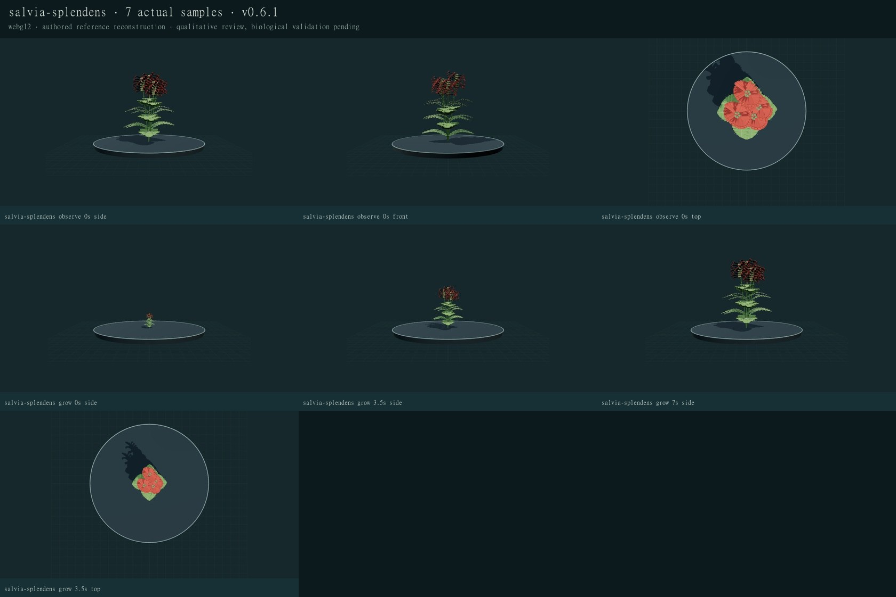
Plantae · Eukaryota · GBIF 2927028 · 7 actual samples · webgl2
Woodland sage Salvia nemorosa
Open this model and its evidence → Compared and revised: Upright repeated purple floral whorls with narrower toothed leaves.
Compared and revised: Upright repeated purple floral whorls with narrower toothed leaves.
Remaining inaccuracies: Inflorescence bracts, bilabiate corollas, stem pubescence and basal/cauline leaf differences are approximate. Size interpolation is not acropetal flowering or measured development.
Real image: C T Johansson · CC BY-SA 3.0 · Original caption, imaging context and terms. Delivered SHA-256 e768334e4ec3e691b7fab389f4005c30b706525381c8b7912b98e8bee56c528c.
Source and movement scope
Same model identifier: reference-salvia-nemorosa. Display seconds have no calibrated biological time.
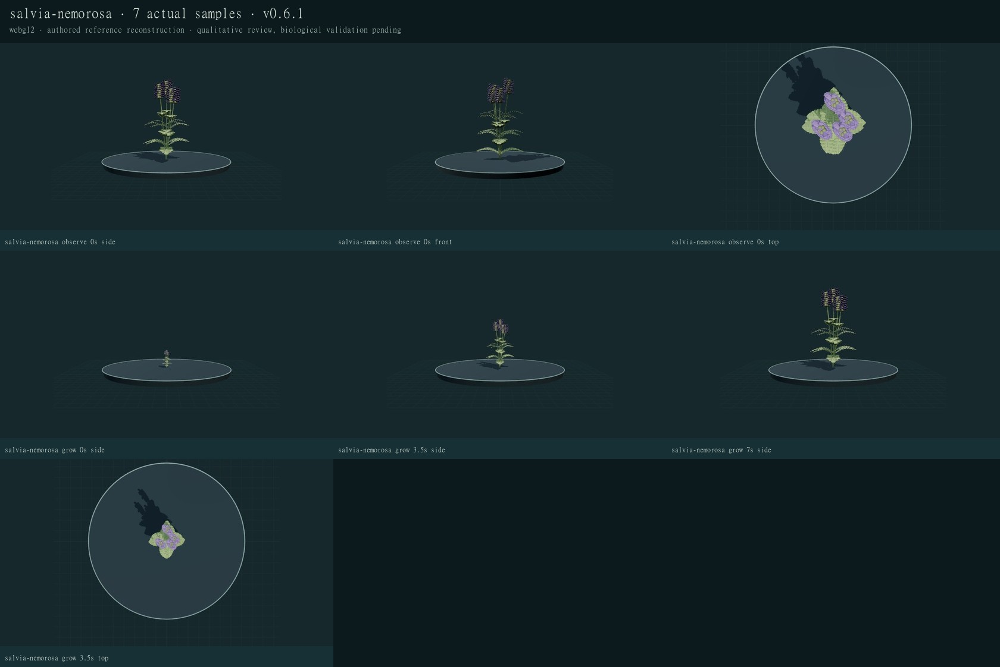
Plantae · Eukaryota · GBIF 2927303 · 7 actual samples · webgl2
French lavender Lavandula stoechas
Open this model and its evidence → Compared and revised: Compact flower heads and conspicuous upright sterile purple bracts with narrow leaves.
Compared and revised: Compact flower heads and conspicuous upright sterile purple bracts with narrow leaves.
Remaining inaccuracies: Sterile bracts are too regular; compact calyx arrangement, pubescence and natural branching need work. Replaced an unsuitable-license candidate with CC BY-SA photography. Size study does not develop a flower head.
Real image: Krzysztof Ziarnek, Kenraiz · CC BY-SA 4.0 · Original caption, imaging context and terms. Delivered SHA-256 dae03d358bf6dbafa12ccfff7542b04842529b5e40b27184918591851802c6bf.
Source and movement scope
- Lavandula stoechas (Bract Lavender, Butterfly Lavender, French Lavender, Spanish Lavender, Topped Lavender) | North Carolina Extension Gardener Plant Toolbox: Qualitative species/genus morphology context; no measured geometry, motion or developmental rate imported. Retrieved account supports qualitative context only. Retrieval: readable account.
- GBIF · Accepted species taxonomy: Taxonomic name/rank/family matching only; not behavior or native-range evidence.
- Licensed real organism reference and imaging context: Actual reference image and original caption/creator/license; not universal phenotype or biological validation.
- Anchored size study · partial: Authored reference reconstruction from qualitative morphology and the separately licensed image. Shape, pigmentation, stage, dimensions and playback are not measured or independently validated. Anchored size is a display interpolation, not a growth, ontogenetic or biomechanical simulation.
Same model identifier: reference-lavandula-stoechas. Display seconds have no calibrated biological time.
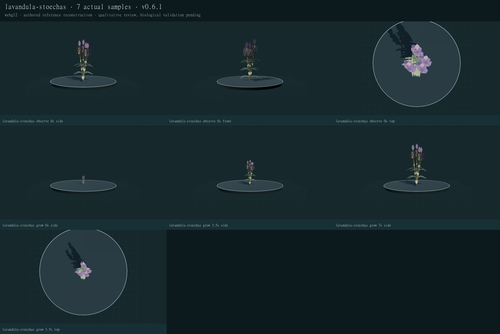
Plantae · Eukaryota · GBIF 2926406 · 7 actual samples · webgl2
Anise hyssop Agastache foeniculum
Open this model and its evidence → Compared and revised: Dense violet terminal spikes with opposite toothed leaves and visible veins.
Compared and revised: Dense violet terminal spikes with opposite toothed leaves and visible veins.
Remaining inaccuracies: Spikelet/calyx organization, leaf bases, petioles and glandular hairs remain simplified. Authored surface pigment is not a tissue texture measurement; only a mature-form size study is available.
Real image: Meneerke bloem · CC BY-SA 3.0 · Original caption, imaging context and terms. Delivered SHA-256 e749ba9115eca364d5513f294148939cf246cb1bcef656e69fbc24c3e794a8cb.
Source and movement scope
Same model identifier: reference-agastache-foeniculum. Display seconds have no calibrated biological time.
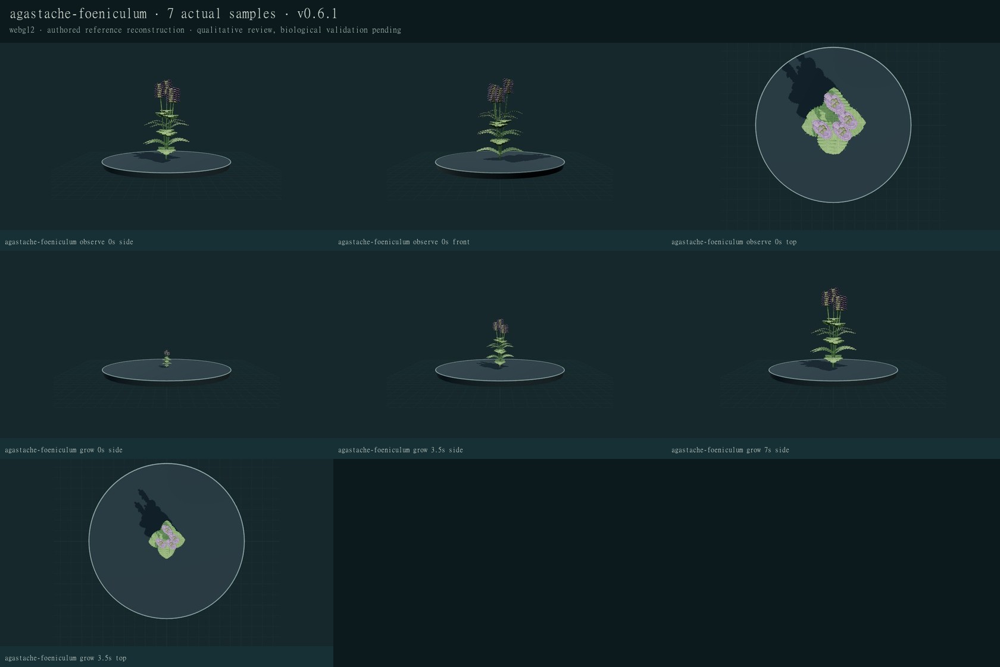
Plantae · Eukaryota · GBIF 5341407 · 7 actual samples · webgl2
Scarlet beebalm Monarda didyma
Open this model and its evidence → Compared and revised: Long red tubular florets in terminal heads, colored bract cues and opposite leaves.
Compared and revised: Long red tubular florets in terminal heads, colored bract cues and opposite leaves.
Remaining inaccuracies: Flower tubes and lips need more accurate radial orientation; bract shape and head density remain idealized. Stamens, style and pollination are absent. Size interpolation is not flower development.
Real image: Alex Abair · CC BY 4.0 · Original caption, imaging context and terms. Delivered SHA-256 bc2cd35fdc9d3e150fcccddb792646ed80a95239a17d32dd0fc765d485bc4f06.
Source and movement scope
- Monarda didyma (Beebalm, Bee Balm, Bee-balm, Bergamont, Bergamot, Crimson Bee-balm, Horsemint, Oswego Tea, Scarlet Bee Balm) | North Carolina Extension Gardener Plant Toolbox: Qualitative species/genus morphology context; no measured geometry, motion or developmental rate imported. Retrieved account supports qualitative context only. Retrieval: readable account.
- GBIF · Accepted species taxonomy: Taxonomic name/rank/family matching only; not behavior or native-range evidence.
- Licensed real organism reference and imaging context: Actual reference image and original caption/creator/license; not universal phenotype or biological validation.
- Anchored size study · partial: Authored reference reconstruction from qualitative morphology and the separately licensed image. Shape, pigmentation, stage, dimensions and playback are not measured or independently validated. Anchored size is a display interpolation, not a growth, ontogenetic or biomechanical simulation.
Same model identifier: reference-monarda-didyma. Display seconds have no calibrated biological time.
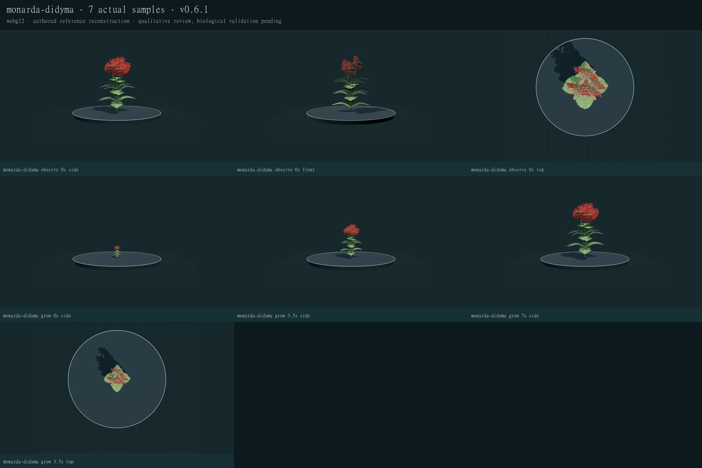
Plantae · Eukaryota · GBIF 5341297 · 7 actual samples · webgl2
Common selfheal Prunella vulgaris
Open this model and its evidence → Compared and revised: Short compact purple flower heads with opposite leaves and separated lips.
Compared and revised: Short compact purple flower heads with opposite leaves and separated lips.
Remaining inaccuracies: Overlapping broad bracts, two-lipped calyx and creeping shoot architecture remain incomplete. The botanical account supports morphology only; display scaling is not ontogeny.
Real image: Ivar Leidus · CC BY-SA 3.0 · Original caption, imaging context and terms. Delivered SHA-256 5b063a49f326c590305e44f14485f370405f7c89e7cbedc40092bdc44b2254cd.
Source and movement scope
- WAF Block - The University of Sydney: Qualitative species morphology context; No geometry measurements or biomechanical rates imported. Direct full-text retrieval limited; independent source reading and identification remain incomplete. Retrieval: limited; further reading needed.
- GBIF · Accepted species taxonomy: Taxonomic name/rank/family matching only; not behavior or native-range evidence.
- Licensed real organism reference and imaging context: Actual reference image and original caption/creator/license; not universal phenotype or biological validation.
- Anchored size study · partial: Authored reference reconstruction from qualitative morphology and the separately licensed image. Shape, pigmentation, stage, dimensions and playback are not measured or independently validated. Anchored size is a display interpolation, not a growth, ontogenetic or biomechanical simulation.
Same model identifier: reference-prunella-vulgaris. Display seconds have no calibrated biological time.
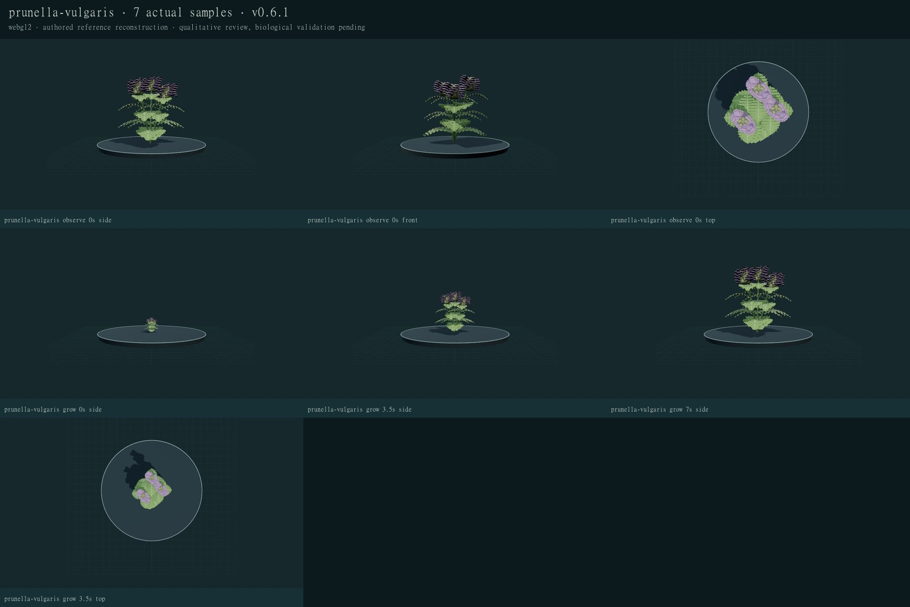
Plantae · Eukaryota · GBIF 2927078 · 7 actual samples · webgl2
Creeping bugle Ajuga reptans
Open this model and its evidence → Compared and revised: Basal rosette and short upright blue-flowered shoots distinguish the low habit.
Compared and revised: Basal rosette and short upright blue-flowered shoots distinguish the low habit.
Remaining inaccuracies: Creeping stolons, rooted nodes and characteristic reduced upper lip need refinement. Some rosette geometry repeats between shoots; source pigment and posture remain qualitative. Size study does not reproduce clonal spread.
Real image: G. Edward Johnson · CC BY-SA 3.0 · Original caption, imaging context and terms. Delivered SHA-256 ac58b3d282609aeda808054a9a9f22e105860b55a2e1a14f6d0229112cd71e81.
Source and movement scope
- Ajuga reptans (Ajuga, Blue Bugle, Bugleherb, Bugleweed, Bugle Weed, Carpet Bugle) | North Carolina Extension Gardener Plant Toolbox: Qualitative species/genus morphology context; no measured geometry, motion or developmental rate imported. Retrieved account supports qualitative context only. Retrieval: readable account.
- GBIF · Accepted species taxonomy: Taxonomic name/rank/family matching only; not behavior or native-range evidence.
- Licensed real organism reference and imaging context: Actual reference image and original caption/creator/license; not universal phenotype or biological validation.
- Anchored size study · partial: Authored reference reconstruction from qualitative morphology and the separately licensed image. Shape, pigmentation, stage, dimensions and playback are not measured or independently validated. Anchored size is a display interpolation, not a growth, ontogenetic or biomechanical simulation.
Same model identifier: reference-ajuga-reptans. Display seconds have no calibrated biological time.
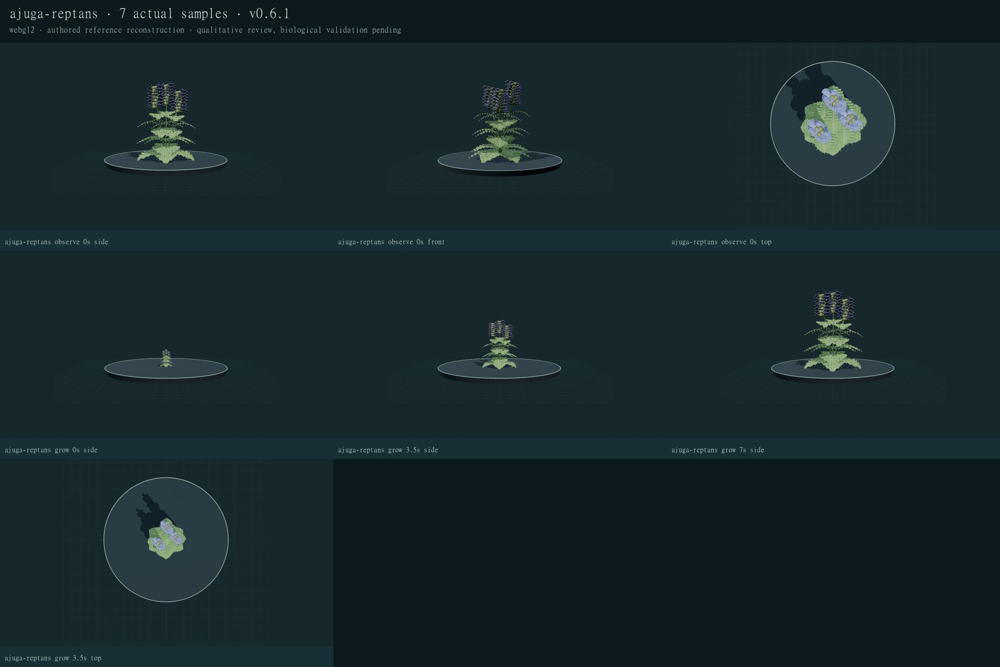
Plantae · Eukaryota · GBIF 2927230 · 7 actual samples · webgl2
Lamb’s ear Stachys byzantina
Open this model and its evidence → Compared and revised: Broad gray leaves with fine pale hair instances and upright flower whorls.
Compared and revised: Broad gray leaves with fine pale hair instances and upright flower whorls.
Remaining inaccuracies: The woolly covering is sparse at close range and the rosette/stem leaf transition is too regular. Calyx hairs, flower lips and real soft leaf texture need more work. Size study is not measured growth.
Real image: Jean-Pol GRANDMONT · CC BY-SA 3.0 · Original caption, imaging context and terms. Delivered SHA-256 78380b8749e7f0989f7b2511253f5373b67c7be6aa47485d04dd91b23f296142.
Source and movement scope
- Stachys byzantina (Donkey's Ears, Lamb's Ear, Lamb's-ears, Lamb's wool, Wooly Betony) | North Carolina Extension Gardener Plant Toolbox: Qualitative species/genus morphology context; no measured geometry, motion or developmental rate imported. Retrieved account supports qualitative context only. Retrieval: readable account.
- GBIF · Accepted species taxonomy: Taxonomic name/rank/family matching only; not behavior or native-range evidence.
- Licensed real organism reference and imaging context: Actual reference image and original caption/creator/license; not universal phenotype or biological validation.
- Anchored size study · partial: Authored reference reconstruction from qualitative morphology and the separately licensed image. Shape, pigmentation, stage, dimensions and playback are not measured or independently validated. Anchored size is a display interpolation, not a growth, ontogenetic or biomechanical simulation.
Same model identifier: reference-stachys-byzantina. Display seconds have no calibrated biological time.
Plantae · Eukaryota · GBIF 5341389 · 7 actual samples · webgl2
Motherwort Leonurus cardiaca
Open this model and its evidence → Compared and revised: Opposite lower leaves now use a continuous palmately lobed outline with radiating veins; narrower upper leaves accompany pale axillary flower whorls.
Compared and revised: Opposite lower leaves now use a continuous palmately lobed outline with radiating veins; narrower upper leaves accompany pale axillary flower whorls.
Remaining inaccuracies: Lobe teeth, mature shoot variation and the transition from broad lower to narrower upper leaves remain approximate. Square stem, spiny calyx teeth and stage differences require further work. Size scaling is not development.
Real image: D. Gordon E. Robertson · CC BY-SA 3.0 · Original caption, imaging context and terms. Delivered SHA-256 74c8c925cc9172788c625f98a3ee684b7954cb9af634f20dd6b82be9d2f9e5c6.
Source and movement scope
- Motherwort: Qualitative species morphology context; No geometry measurements or biomechanical rates imported. Retrieved account supports qualitative context only. Retrieval: readable account.
- GBIF · Accepted species taxonomy: Taxonomic name/rank/family matching only; not behavior or native-range evidence.
- Licensed real organism reference and imaging context: Actual reference image and original caption/creator/license; not universal phenotype or biological validation.
- Anchored size study · partial: Authored reference reconstruction from qualitative morphology and the separately licensed image. Shape, pigmentation, stage, dimensions and playback are not measured or independently validated. Anchored size is a display interpolation, not a growth, ontogenetic or biomechanical simulation.
Same model identifier: reference-leonurus-cardiaca. Display seconds have no calibrated biological time.
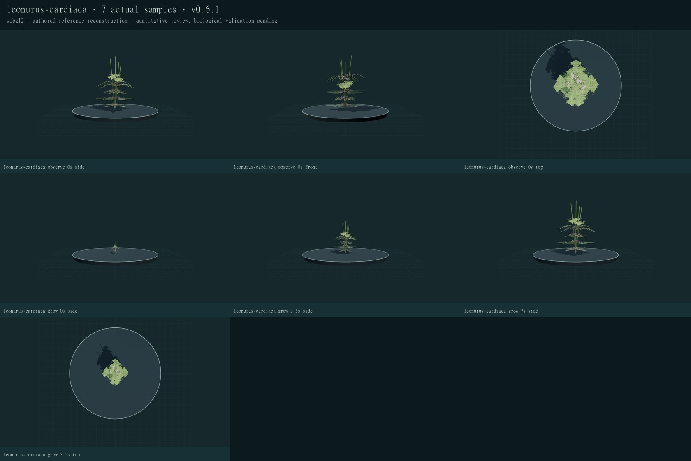
Plantae · Eukaryota · GBIF 2926683 · 7 actual samples · webgl2
White deadnettle Lamium album
Open this model and its evidence → Compared and revised: Opposite toothed leaves and white hooded-flower cues in axillary whorls.
Compared and revised: Opposite toothed leaves and white hooded-flower cues in axillary whorls.
Remaining inaccuracies: Calyx teeth, corolla hood hair, leaf base and petiole proportions remain approximate. Direct flora retrieval was limited, so further species-account reading is needed. No actual growth or pollination simulation.
Real image: Coyau · CC BY-SA 3.0 · Original caption, imaging context and terms. Delivered SHA-256 6ce48b587c20f7226464fdf98762c14ada4bbb05ed402ed4e8e5b683dbd2d7e2.
Source and movement scope
- 404 Not Found | North Carolina Extension Gardener Plant Toolbox: Qualitative species/genus morphology context; no measured geometry, motion or developmental rate imported. Direct full-text retrieval limited; independent source reading and identification remain incomplete. Retrieval: limited; further reading needed.
- GBIF · Accepted species taxonomy: Taxonomic name/rank/family matching only; not behavior or native-range evidence.
- Licensed real organism reference and imaging context: Actual reference image and original caption/creator/license; not universal phenotype or biological validation.
- Anchored size study · partial: Authored reference reconstruction from qualitative morphology and the separately licensed image. Shape, pigmentation, stage, dimensions and playback are not measured or independently validated. Anchored size is a display interpolation, not a growth, ontogenetic or biomechanical simulation.
Same model identifier: reference-lamium-album. Display seconds have no calibrated biological time.
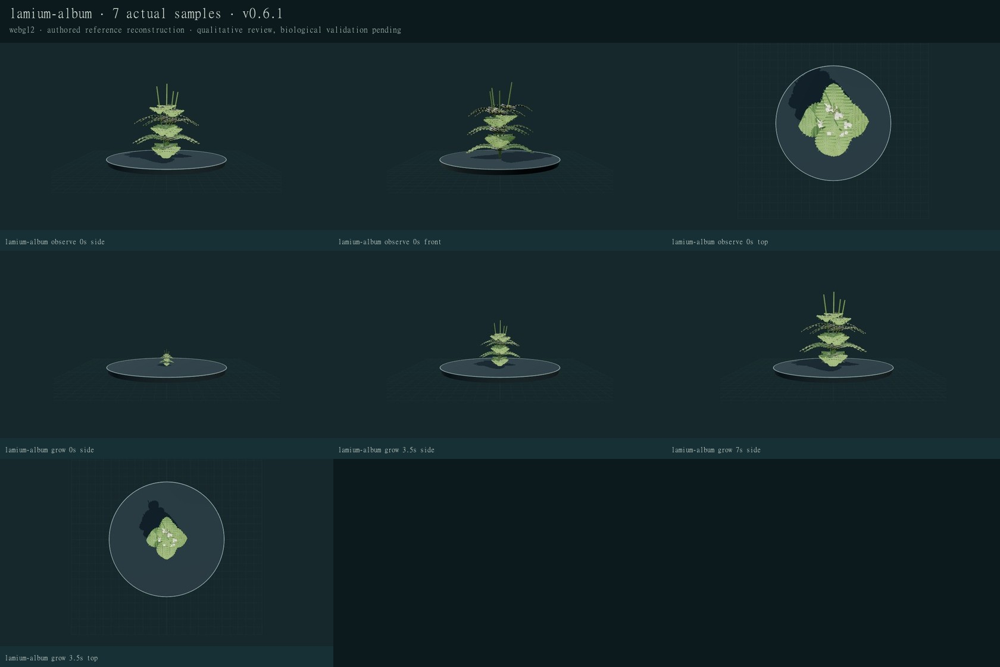
Plantae · Eukaryota · GBIF 5341492 · 7 actual samples · webgl2
Painted nettle Coleus scutellarioides
Open this model and its evidence → Compared and revised: Green-leaved reconstruction follows the wild green phenotype in the real reference instead of imposing a red ornamental center.
Compared and revised: Green-leaved reconstruction follows the wild green phenotype in the real reference instead of imposing a red ornamental center.
Remaining inaccuracies: Leaf shape, marginal teeth and floral arrangement vary with genotype/cultivar. Petiole and stem proportions remain generic within the family; size interpolation is not leaf expansion or pigmentation physiology.
Real image: Bjoertvedt · CC BY-SA 4.0 · Original caption, imaging context and terms. Delivered SHA-256 a2266d5907126ebb3687f5d96a0ca2050f58680f787a677e6164decbd28bb430.
Source and movement scope
Same model identifier: reference-coleus-scutellarioides. Display seconds have no calibrated biological time.
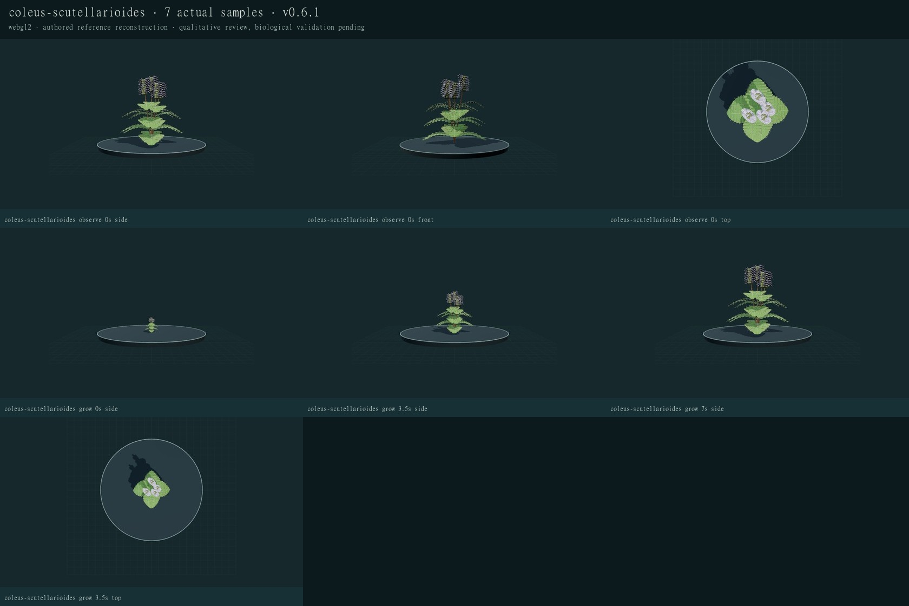
Fungi · Eukaryota · GBIF 7496350 · 7 actual samples · webgl2
Blusher Amanita rubescens
Open this model and its evidence → Compared and revised: Brownish cap with veil remnants attached to the cap surface, continuous pale underside, separate ring and bulbous stipe.
Compared and revised: Brownish cap with veil remnants attached to the cap surface, continuous pale underside, separate ring and bulbous stipe.
Remaining inaccuracies: Reddening flesh, striate ring, veil texture, gill attachment and geographic species-complex identity remain unresolved. The photographed cap stage differs from the authored convex stage. No biological fruit-body growth.
Real image: Archenzo (attribution on the linked Commons source; legacy metadata inferred author) · CC BY-SA 3.0 · Original caption, imaging context and terms. Delivered SHA-256 a69bfba26aa8f5b6cbc16beaede10313014746f22399b8666e0c1a0d9d43c2ba.
Source and movement scope
- Amanita rubescens (MushroomExpert.Com): Qualitative species/genus morphology context; no measured geometry, motion or developmental rate imported. Retrieved account supports qualitative context only. Retrieval: readable account.
- GBIF · Accepted species taxonomy: Taxonomic name/rank/family matching only; not behavior or native-range evidence.
- Licensed real organism reference and imaging context: Actual reference image and original caption/creator/license; not universal phenotype or biological validation.
- Fruit-body size study · partial: Authored reference reconstruction from qualitative morphology and the separately licensed image. Shape, pigmentation, stage, dimensions and playback are not measured or independently validated. Anchored size is a display interpolation, not a growth, ontogenetic or biomechanical simulation.
Same model identifier: reference-amanita-rubescens. Display seconds have no calibrated biological time.
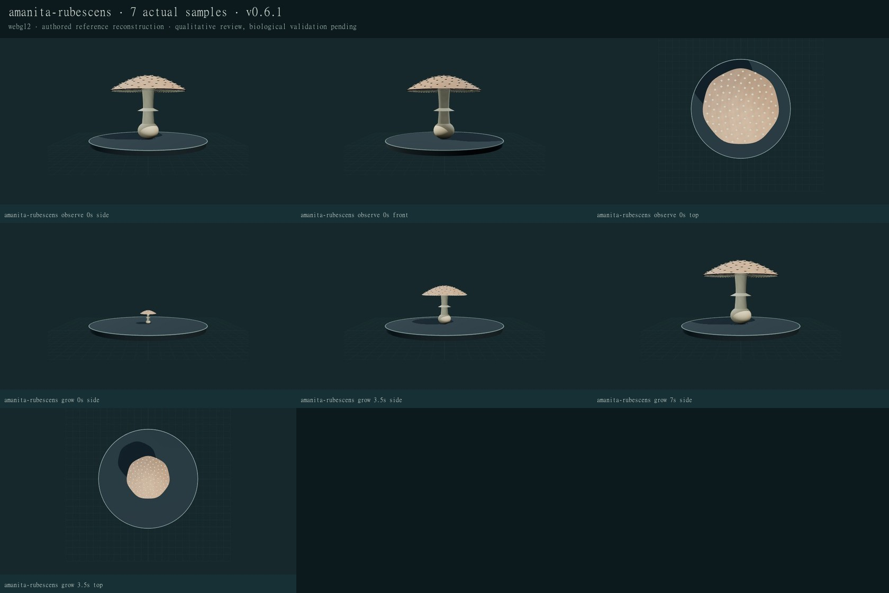
Fungi · Eukaryota · GBIF 8961574 · 7 actual samples · webgl2
Panthercap Amanita pantherina
Open this model and its evidence → Compared and revised: Brown cap with pale veil patches, ring and rimmed basal bulb cues.
Compared and revised: Brown cap with pale veil patches, ring and rimmed basal bulb cues.
Remaining inaccuracies: Exact volval rim, striate cap margin and veil patch texture remain idealized. The North American source discusses related taxa; it is not interchangeable with Eurasian A. pantherina. Identification is not established by cap color.
Real image: George Chernilevsky · Public domain · Original caption, imaging context and terms. Delivered SHA-256 1a7e528c465f9e46a6db46b6280ce26e50e81fab19e629179906077b924ae532.
Source and movement scope
- Amanita pantherina (MushroomExpert.Com): Qualitative species/genus morphology context; no measured geometry, motion or developmental rate imported. Retrieved account supports qualitative context only. Retrieval: readable account.
- GBIF · Accepted species taxonomy: Taxonomic name/rank/family matching only; not behavior or native-range evidence.
- Licensed real organism reference and imaging context: Actual reference image and original caption/creator/license; not universal phenotype or biological validation.
- Fruit-body size study · partial: Authored reference reconstruction from qualitative morphology and the separately licensed image. Shape, pigmentation, stage, dimensions and playback are not measured or independently validated. Anchored size is a display interpolation, not a growth, ontogenetic or biomechanical simulation.
Same model identifier: reference-amanita-pantherina. Display seconds have no calibrated biological time.
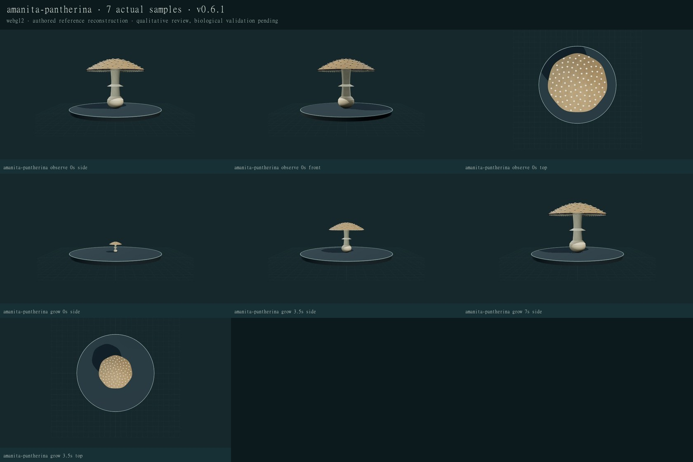
Fungi · Eukaryota · GBIF 8914748 · 7 actual samples · webgl2
Parasol mushroom Macrolepiota procera
Open this model and its evidence → Compared and revised: Tall stipe, broad cap, ring, scale cues and a patterned stipe.
Compared and revised: Tall stipe, broad cap, ring, scale cues and a patterned stipe.
Remaining inaccuracies: Cap scales are too regular and the snakeskin stipe pattern is only approximated by patches. Gill insertion, movable double ring and central umbo need reconstruction. Mature-form scaling is not fruiting development.
Real image: Holger Krisp · CC BY 3.0 · Original caption, imaging context and terms. Delivered SHA-256 9efbc8213caff8acca63dac4dc55e06f9a57664bb87be239ee4a311084893cf8.
Source and movement scope
- Macrolepiota procera (MushroomExpert.Com): Qualitative species/genus morphology context; no measured geometry, motion or developmental rate imported. Retrieved account supports qualitative context only. Retrieval: readable account.
- GBIF · Accepted species taxonomy: Taxonomic name/rank/family matching only; not behavior or native-range evidence.
- Licensed real organism reference and imaging context: Actual reference image and original caption/creator/license; not universal phenotype or biological validation.
- Fruit-body size study · partial: Authored reference reconstruction from qualitative morphology and the separately licensed image. Shape, pigmentation, stage, dimensions and playback are not measured or independently validated. Anchored size is a display interpolation, not a growth, ontogenetic or biomechanical simulation.
Same model identifier: reference-macrolepiota-procera. Display seconds have no calibrated biological time.
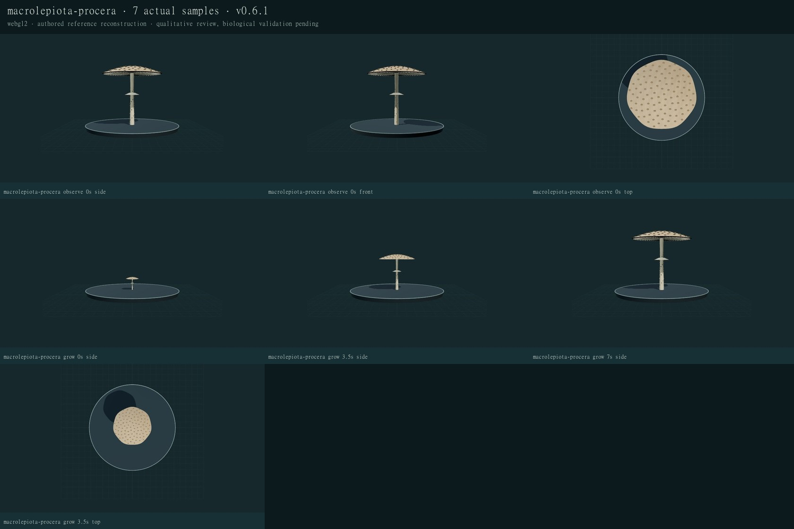
Fungi · Eukaryota · GBIF 2551213 · 7 actual samples · webgl2
The sickener Russula emetica
Open this model and its evidence → Compared and revised: Smooth red cap, pale gill cues and white stipe without veil remnants or ring.
Compared and revised: Smooth red cap, pale gill cues and white stipe without veil remnants or ring.
Remaining inaccuracies: The reference mature cap is more depressed; natural margin striation and gill attachment need refinement. Red-cap identity requires microscopy/ecology and cannot be established by this image/model. Size scaling is not ontogeny.
Real image: MichalPL · CC BY-SA 4.0 · Original caption, imaging context and terms. Delivered SHA-256 de3f7e7c7df656395ed0912ad87985d432e92bbef5f2cd2a2e3eddb2babc6a4c.
Source and movement scope
- Emetic Russula | Missouri Department of Conservation: Qualitative species morphology context; No geometry measurements or biomechanical rates imported. Retrieved account supports qualitative context only. Retrieval: readable account.
- GBIF · Accepted species taxonomy: Taxonomic name/rank/family matching only; not behavior or native-range evidence.
- Licensed real organism reference and imaging context: Actual reference image and original caption/creator/license; not universal phenotype or biological validation.
- Fruit-body size study · partial: Authored reference reconstruction from qualitative morphology and the separately licensed image. Shape, pigmentation, stage, dimensions and playback are not measured or independently validated. Anchored size is a display interpolation, not a growth, ontogenetic or biomechanical simulation.
Same model identifier: reference-russula-emetica. Display seconds have no calibrated biological time.
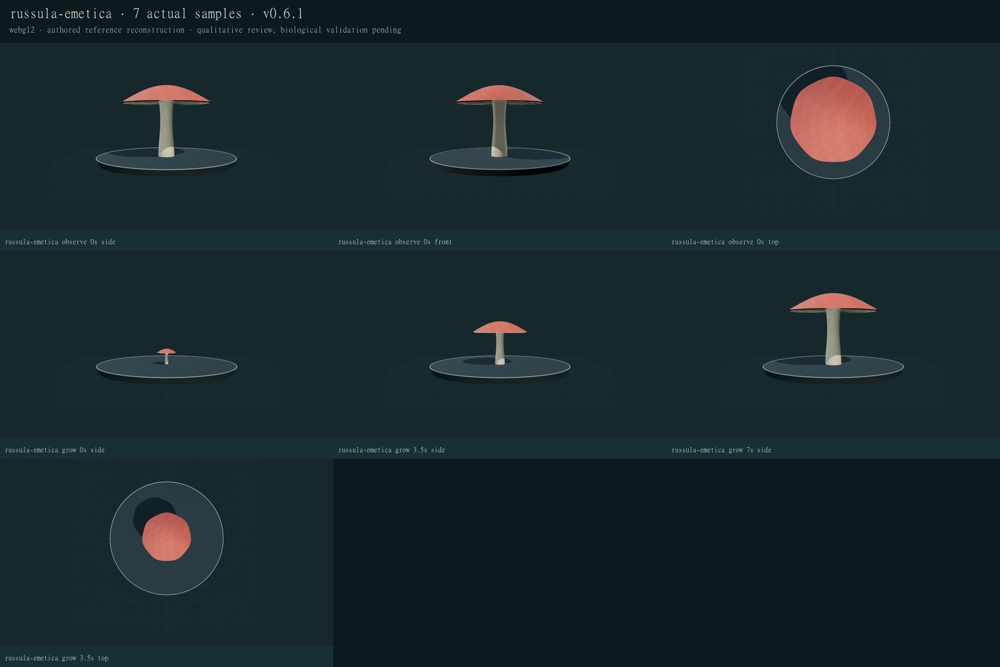
Fungi · Eukaryota · GBIF 5248629 · 7 actual samples · webgl2
Saffron milkcap Lactarius deliciosus
Open this model and its evidence → Compared and revised: Zoned orange cap with shallow depressed center and decurrent gill cues.
Compared and revised: Zoned orange cap with shallow depressed center and decurrent gill cues.
Remaining inaccuracies: Natural zonation, green bruising, stipe pits and gill architecture are approximate. Orange latex is described as identification context but is not simulated. Size interpolation is not actual fruit-body development.
Real image: Eric Steinert · CC BY-SA 3.0 · Original caption, imaging context and terms. Delivered SHA-256 08c0ee186e8d0f2975caddc52a042ae5728d6302b3c5e0ca7745ed2f6e202edd.
Source and movement scope
- Lactarius deliciosus group (MushroomExpert.Com): Qualitative species/genus morphology context; no measured geometry, motion or developmental rate imported. Retrieved account supports qualitative context only. Retrieval: readable account.
- GBIF · Accepted species taxonomy: Taxonomic name/rank/family matching only; not behavior or native-range evidence.
- Licensed real organism reference and imaging context: Actual reference image and original caption/creator/license; not universal phenotype or biological validation.
- Fruit-body size study · partial: Authored reference reconstruction from qualitative morphology and the separately licensed image. Shape, pigmentation, stage, dimensions and playback are not measured or independently validated. Anchored size is a display interpolation, not a growth, ontogenetic or biomechanical simulation.
Same model identifier: reference-lactarius-deliciosus. Display seconds have no calibrated biological time.
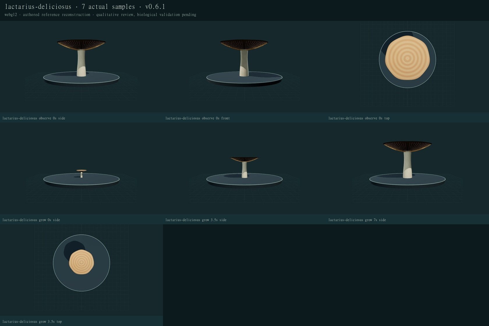
Fungi · Eukaryota · GBIF 2554662 · 7 actual samples · webgl2
Horn of plenty Craterellus cornucopioides
Open this model and its evidence → Compared and revised: Continuous hollow dark funnel, open throat, wavy rim and no invented true gills.
Compared and revised: Continuous hollow dark funnel, open throat, wavy rim and no invented true gills.
Remaining inaccuracies: The natural thin folded wall, irregular margin and wrinkled fertile outer surface need closer reconstruction. Internal hollowness is an authored surface, not a scanned section. No actual development.
Real image: Jean-Pol GRANDMONT · CC BY 3.0 · Original caption, imaging context and terms. Delivered SHA-256 11735e007034ff60512a697058f020b07bf650b1c0dbe17c8c43a6b59b3b04df.
Source and movement scope
- Craterellus cornucopioides (MushroomExpert.Com): Qualitative species/genus morphology context; no measured geometry, motion or developmental rate imported. Retrieved account supports qualitative context only. Retrieval: readable account.
- GBIF · Accepted species taxonomy: Taxonomic name/rank/family matching only; not behavior or native-range evidence.
- Licensed real organism reference and imaging context: Actual reference image and original caption/creator/license; not universal phenotype or biological validation.
- Fruit-body size study · partial: Authored reference reconstruction from qualitative morphology and the separately licensed image. Shape, pigmentation, stage, dimensions and playback are not measured or independently validated. Anchored size is a display interpolation, not a growth, ontogenetic or biomechanical simulation.
Same model identifier: reference-craterellus-cornucopioides. Display seconds have no calibrated biological time.
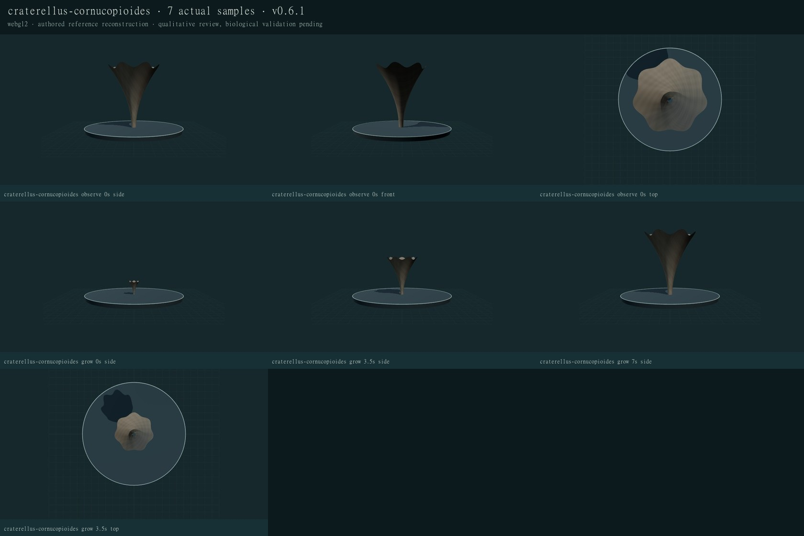
Fungi · Eukaryota · GBIF 8068867 · 7 actual samples · webgl2
Tinder fungus Fomes fomentarius
Open this model and its evidence → Compared and revised: Smoothed the over-stepped bracket relief into a continuous hoof-shaped surface with gray concentric pigment bands and a pale underside.
Compared and revised: Smoothed the over-stepped bracket relief into a continuous hoof-shaped surface with gray concentric pigment bands and a pale underside.
Remaining inaccuracies: Pore openings, woody substrate junction and irregular growth zones are unresolved. Pigment bands remain authored and the bracket represents one form. Scaling does not simulate annual layer deposition.
Real image: George Chernilevsky · Public domain · Original caption, imaging context and terms. Delivered SHA-256 834c68075cae77894baa604b439bbcb6d9c82f7f6fc768db14b0b24d0196aaba.
Source and movement scope
- Fomes fomentarius (MushroomExpert.Com): Qualitative species/genus morphology context; no measured geometry, motion or developmental rate imported. Retrieved account supports qualitative context only. Retrieval: readable account.
- GBIF · Accepted species taxonomy: Taxonomic name/rank/family matching only; not behavior or native-range evidence.
- Licensed real organism reference and imaging context: Actual reference image and original caption/creator/license; not universal phenotype or biological validation.
- Fruit-body size study · partial: Authored reference reconstruction from qualitative morphology and the separately licensed image. Shape, pigmentation, stage, dimensions and playback are not measured or independently validated. Anchored size is a display interpolation, not a growth, ontogenetic or biomechanical simulation.
Same model identifier: reference-fomes-fomentarius. Display seconds have no calibrated biological time.
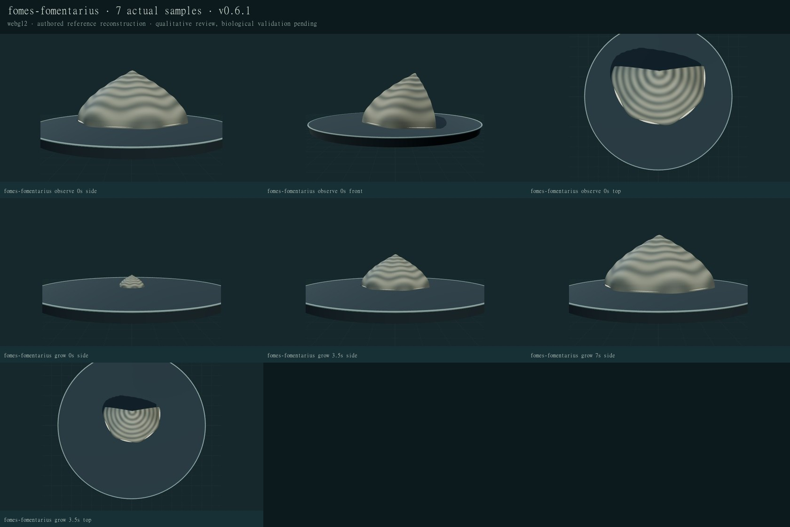
Fungi · Eukaryota · GBIF 2549730 · 7 actual samples · webgl2
Lacquered bracket Ganoderma lucidum
Open this model and its evidence → Compared and revised: Reduced excessive surface steps on the reddish varnished bracket, retained its pale margin, underside and lateral stalk cue.
Compared and revised: Reduced excessive surface steps on the reddish varnished bracket, retained its pale margin, underside and lateral stalk cue.
Remaining inaccuracies: Pore surface, cap outline, substrate attachment and precise lacquer texture are incomplete. Historical G. lucidum includes multiple taxa; Asian G. lingzhi is not equivalent. Photo identity is not independently established; no medicinal or growth claims.
Real image: William Bungay · CC0 · Original caption, imaging context and terms. Delivered SHA-256 3c21da77401702dcfb3aeead262e81a39998d9864c7ee261a628188121487668.
Source and movement scope
- The Genus Ganoderma (MushroomExpert.Com): Qualitative species morphology context; Ganoderma account explicitly covers multiple species. No geometry measurements or biomechanical rates imported. Retrieved account supports qualitative context only. Retrieval: readable account.
- GBIF · Accepted species taxonomy: Taxonomic name/rank/family matching only; not behavior or native-range evidence.
- Licensed real organism reference and imaging context: Actual reference image and original caption/creator/license; not universal phenotype or biological validation.
- Fruit-body size study · partial: Authored reference reconstruction from qualitative morphology and the separately licensed image. Shape, pigmentation, stage, dimensions and playback are not measured or independently validated. Anchored size is a display interpolation, not a growth, ontogenetic or biomechanical simulation.
Same model identifier: reference-ganoderma-lucidum. Display seconds have no calibrated biological time.
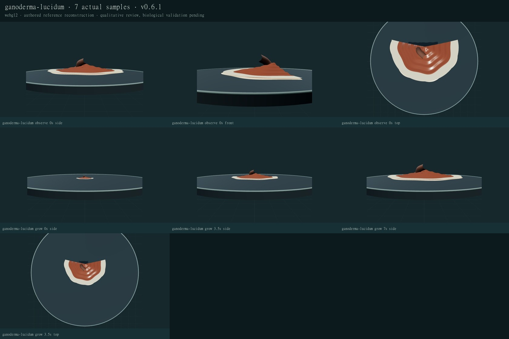
Microeukaryotes · Eukaryota · GBIF 7963097 · 7 actual samples · webgl2
Green paramecium Paramecium bursaria
Open this model and its evidence → Compared and revised: Green internal algal cues within a translucent ciliated outline.
Compared and revised: Green internal algal cues within a translucent ciliated outline.
Remaining inaccuracies: Oral groove, cortex rows, macronucleus/micronucleus and contractile vacuoles are incomplete. Seventy algal display cues are not a biological count. Cilia gesture without swimming forces or calibrated beat timing.
Real image: Picturepest · CC BY 2.0 · Original caption, imaging context and terms. Delivered SHA-256 0f1c31ab52591a4f21b72a7579c48787d28ab3cbf6231418c39276b663d30ea9.
Source and movement scope
- Paramecium Morphology: Qualitative species/genus morphology context; no measured geometry, motion or developmental rate imported. Retrieved account supports qualitative context only. Retrieval: readable account.
- GBIF · Accepted species taxonomy: Taxonomic name/rank/family matching only; not behavior or native-range evidence.
- Licensed real organism reference and imaging context: Actual reference image and original caption/creator/license; not universal phenotype or biological validation.
- Ciliary-beat study · partial: Authored reference reconstruction from qualitative morphology and the separately licensed image. Shape, pigmentation, stage, dimensions and playback are not measured or independently validated. Appendage/deformation controls are partial studies; feeding, forces, fluid dynamics and calibrated locomotion are absent.
Same model identifier: reference-paramecium-bursaria. Display seconds have no calibrated biological time.
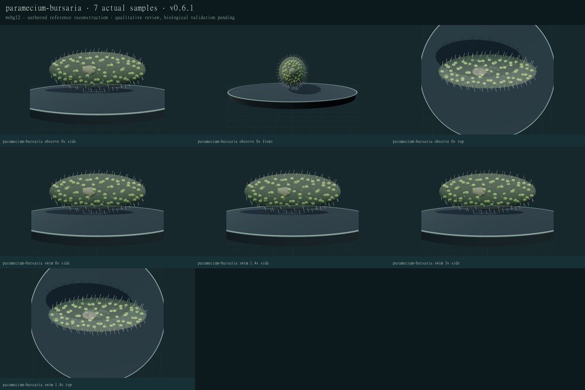
Microeukaryotes · Eukaryota · GBIF 7687633 · 7 actual samples · webgl2
Pink blepharisma Blepharisma japonicum
Open this model and its evidence → Compared and revised: Elongated pink study outline and attached ciliary controls.
Compared and revised: Elongated pink study outline and attached ciliary controls.
Remaining inaccuracies: The real reference is phase-contrast, not natural pigment evidence. Beaded macronucleus, oral field and cortical pigment granules need reconstruction. Pink is qualitative; sparse ciliary gestures are not measured swimming.
Real image: Frank Fox · CC BY-SA 3.0 de · Original caption, imaging context and terms. Delivered SHA-256 0e76e2d385456e84b1b03ccbf8c880f04b0ebecf5e4f7933b0da594c985002bb.
Source and movement scope
- Blepharisma Morphology: Qualitative species/genus morphology context; no measured geometry, motion or developmental rate imported. Retrieved account supports qualitative context only. Retrieval: readable account.
- GBIF · Accepted species taxonomy: Taxonomic name/rank/family matching only; not behavior or native-range evidence.
- Licensed real organism reference and imaging context: Actual reference image and original caption/creator/license; not universal phenotype or biological validation.
- Ciliary-beat study · partial: Authored reference reconstruction from qualitative morphology and the separately licensed image. Shape, pigmentation, stage, dimensions and playback are not measured or independently validated. Appendage/deformation controls are partial studies; feeding, forces, fluid dynamics and calibrated locomotion are absent.
Same model identifier: reference-blepharisma-japonicum. Display seconds have no calibrated biological time.
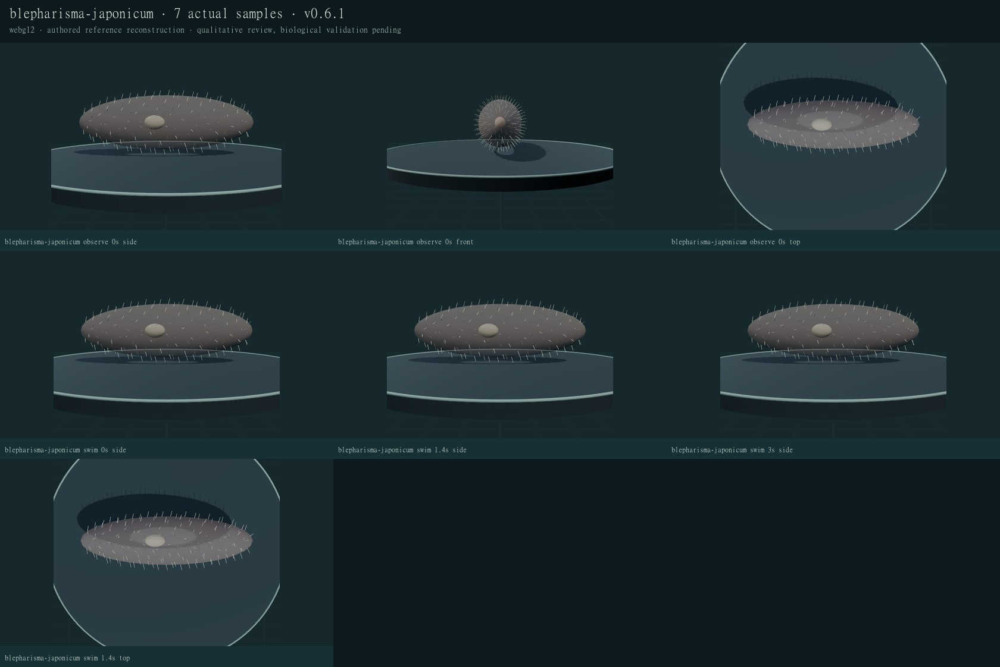
Microeukaryotes · Eukaryota · GBIF 7988249 · 7 actual samples · webgl2
Euplotes Euplotes eurystomus
Open this model and its evidence → Compared and revised: Flattened body and ventral bundled cirrus cues; genus-level photo scope is explicitly retained.
Compared and revised: Flattened body and ventral bundled cirrus cues; genus-level photo scope is explicitly retained.
Remaining inaccuracies: The photograph is not identified as E. eurystomus. Dorsal argyrome, exact cirral pattern, oral membranelles and C-shaped macronucleus remain incomplete. Cirri gesture without a supported walking cycle or calibrated forces.
Real image: Picturepest · CC BY 2.0 · Original caption, imaging context and terms. Delivered SHA-256 a4a14754a1f2f685859979c37816ec051fdd49aef78874ec34122584fa5ba4ff.
Source and movement scope
- Euplotes Morphology: Qualitative species/genus morphology context; no measured geometry, motion or developmental rate imported. Retrieved account supports qualitative context only. Retrieval: readable account.
- GBIF · Accepted species taxonomy: Taxonomic name/rank/family matching only; not behavior or native-range evidence.
- Licensed real organism reference and imaging context: Actual reference image and original caption/creator/license; not universal phenotype or biological validation.
- Ventral cirrus study · partial: Authored reference reconstruction from qualitative morphology and the separately licensed image. Shape, pigmentation, stage, dimensions and playback are not measured or independently validated. Appendage/deformation controls are partial studies; feeding, forces, fluid dynamics and calibrated locomotion are absent.
Same model identifier: reference-euplotes-eurystomus. Display seconds have no calibrated biological time.
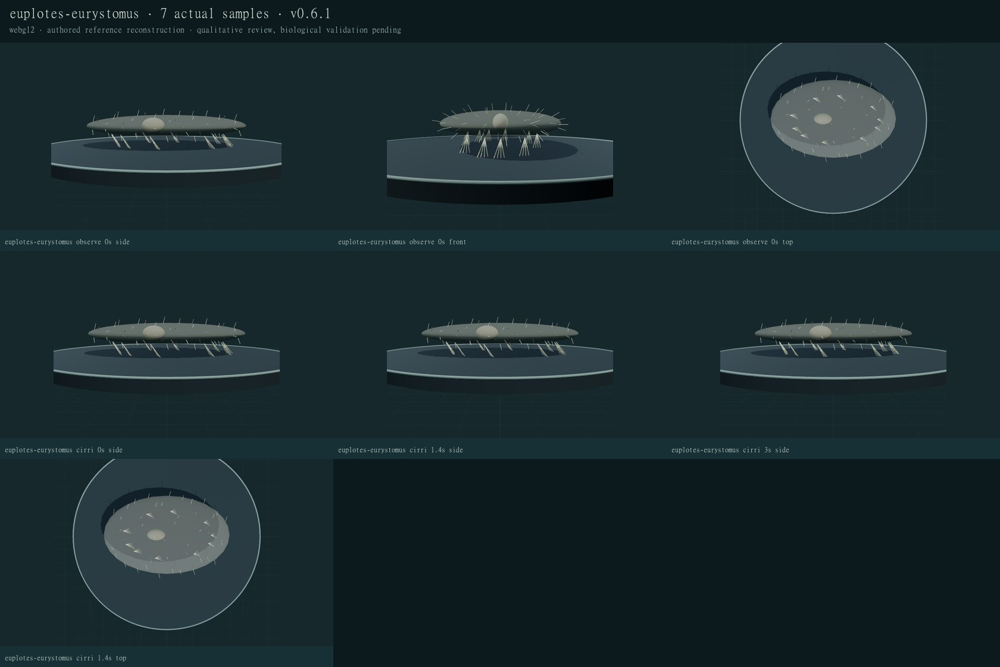
Microeukaryotes · Eukaryota · GBIF 8063862 · 7 actual samples · webgl2
Sea sparkle Noctiluca scintillans
Open this model and its evidence → Compared and revised: Inflated translucent cell, cytoplasmic strand and external tentacle; no permanent artificial glow.
Compared and revised: Inflated translucent cell, cytoplasmic strand and external tentacle; no permanent artificial glow.
Remaining inaccuracies: Ventral groove/tooth, flagellum, vacuole boundary and tentacle striation are incomplete. Tentacle movement is a partial gesture; no prey handling, buoyancy or bioluminescent chemistry.
Real image: Maria Antónia Sampayo, Instituto de Oceanografia, Faculdade Ciências da Universidade de Lisboa · CC BY 3.0 · Original caption, imaging context and terms. Delivered SHA-256 d37739c2324ac91df862aa1fa398c21c0c9f4cfd4c1c347ded41e0c7a1707194.
Source and movement scope
- Harmful Marine Dinoflagellates: Noctiluca scintillans: Species morphology or explicitly scoped institutional habitat/taxonomic context; no measured model coordinates or motion rates imported. Retrieved account supports qualitative context only. Retrieval: readable account.
- GBIF · Accepted species taxonomy: Taxonomic name/rank/family matching only; not behavior or native-range evidence.
- Licensed real organism reference and imaging context: Actual reference image and original caption/creator/license; not universal phenotype or biological validation.
- Tentacle study · partial: Authored reference reconstruction from qualitative morphology and the separately licensed image. Shape, pigmentation, stage, dimensions and playback are not measured or independently validated. Appendage/deformation controls are partial studies; feeding, forces, fluid dynamics and calibrated locomotion are absent.
Same model identifier: reference-noctiluca-scintillans. Display seconds have no calibrated biological time.
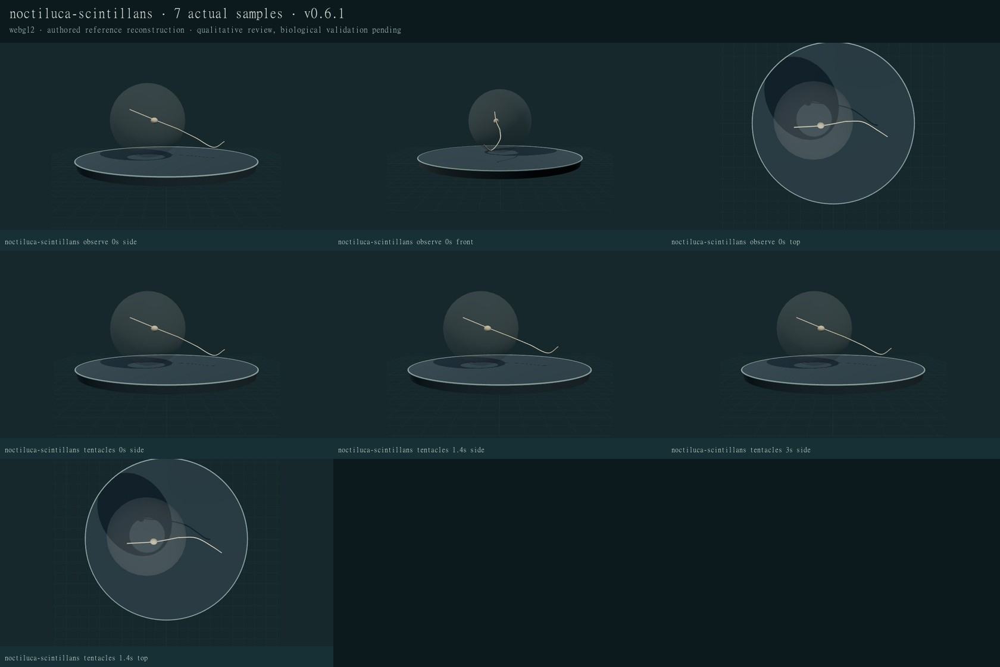
Microeukaryotes · Eukaryota · GBIF 8357990 · 7 actual samples · webgl2
Green euglena Euglena viridis
Open this model and its evidence → Compared and revised: Rejected a historical drawing in favor of a real micrograph; green plastid and eyespot cues with a flagellar gesture.
Compared and revised: Rejected a historical drawing in favor of a real micrograph; green plastid and eyespot cues with a flagellar gesture.
Remaining inaccuracies: Pellicular strips, posterior taper, reservoir and stellate chloroplast organization remain simplified. Exact microscopy identity is not independently confirmed. The flagellar control rotates a retained curve rather than simulating a travelling beat or propulsion.
Real image: Халявский Максим · CC BY-SA 4.0 · Original caption, imaging context and terms. Delivered SHA-256 c792d14bcb44d02de65efef3959f3bbed63f551fc964dda672fe534137fbbfcf.
Source and movement scope
- Euglena Morphology: Qualitative species/genus morphology context; no measured geometry, motion or developmental rate imported. Retrieved account supports qualitative context only. Retrieval: readable account.
- GBIF · Accepted species taxonomy: Taxonomic name/rank/family matching only; not behavior or native-range evidence.
- Licensed real organism reference and imaging context: Actual reference image and original caption/creator/license; not universal phenotype or biological validation.
- Flagellar gesture study · partial: Authored reference reconstruction from qualitative morphology and the separately licensed image. Shape, pigmentation, stage, dimensions and playback are not measured or independently validated. Appendage/deformation controls are partial studies; feeding, forces, fluid dynamics and calibrated locomotion are absent.
Same model identifier: reference-euglena-viridis. Display seconds have no calibrated biological time.
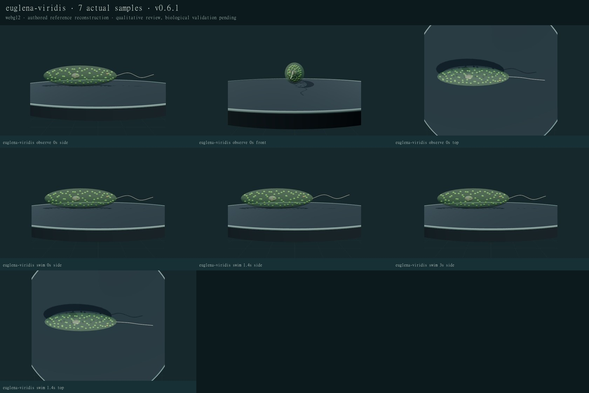
Bacteria · Bacteria · GBIF 11161789 · 3 actual samples · webgl2
Megaterium bacillus Priestia megaterium
Open this model and its evidence → Compared and revised: Rod-shaped envelope, short chain and an endospore cue; accepted name retains the former Bacillus context.
Compared and revised: Rod-shaped envelope, short chain and an endospore cue; accepted name retains the former Bacillus context.
Remaining inaccuracies: Photo shows stained DSM 90 cells; model pigment is illustrative and not the stain or natural color. Endospore position, envelopes and strain proportions are unmeasured. Division remains unavailable.
Real image: Osmoregulator / Osmoregulator at English Wikipedia · CC BY-SA 3.0 · Original caption, imaging context and terms. Delivered SHA-256 c7ca46a8cc7642555b5a194a4f2333fb07062824a59ad316bdcb60ae2a6b7cf4.
Source and movement scope
- Details - Leibniz Institute DSMZ: Qualitative species/genus morphology context; no measured geometry, motion or developmental rate imported. Retrieved account supports qualitative context only. Retrieval: readable account.
- GBIF · Accepted species taxonomy: Taxonomic name/rank/family matching only; not behavior or native-range evidence.
- Licensed real organism reference and imaging context: Actual reference image and original caption/creator/license; not universal phenotype or biological validation.
- Division — pending · unavailable: Biological process documented in the species context; no working simulation of this mechanism is claimed.
Same model identifier: reference-priestia-megaterium. Display seconds have no calibrated biological time.
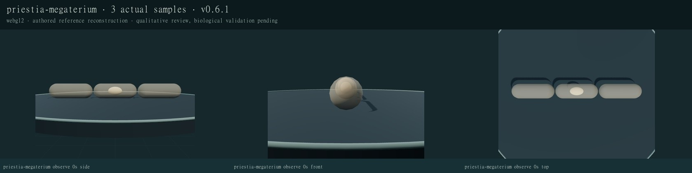
Bacteria · Bacteria · GBIF 9096291 · 3 actual samples · webgl2
Yellow micrococcus Micrococcus luteus
Open this model and its evidence → Compared and revised: Coccoid cells in tetrad/group cues with neutral single-cell pigment.
Compared and revised: Coccoid cells in tetrad/group cues with neutral single-cell pigment.
Remaining inaccuracies: CDC SEM imaging is not a yellow living-cell color standard; yellow colonies are a different scale. Group spacing, cell surface and dimensions remain idealized, and the referenced culture is distinct from the CDC material. Division remains unavailable.
Real image: Photo Credit: Janice Carr Content Providers(s): CDC/ Janice Carr · Public domain · Original caption, imaging context and terms. Delivered SHA-256 bd7bdbb054b31d69e1c35601f8bb101f0481df44b1af6259824bb83677bdea84.
Source and movement scope
Same model identifier: reference-micrococcus-luteus. Display seconds have no calibrated biological time.
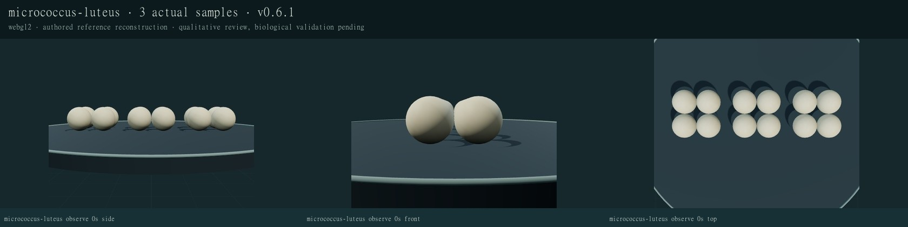